開卷有益 ／
學科能力測驗 ／ 自然 ／ 112 年112 年學科能力測驗自然試題與答案
這一頁是民國 112 年學科能力測驗自然的整份歷屆試題，共 59 題，題目與標準答案出自大考中心 學測歷年試題（依著作權法 §9，考試試題不受著作權保護），其中 59 題附有詳解。以下逐題列出題幹、選項與答案；要計時作答或記錄成績，請用線上練習。
線上作答這一科 →
全部 59 題
第 1 題（多選）
臺灣北部對「西北颱」特別敏感，因其常帶來嚴重的災害。「西北颱」係指颱風從臺灣東方海面向西北方行進，中心通過基隆與彭佳嶼之間的海面彭佳嶼（如圖 1）。下列選項，哪些最有可能是颱風經過前後在基隆及彭佳嶼測得的風向？（應選 2 項）
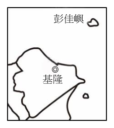
（A） 基隆的風向由北風轉南風 ◎（B） 彭佳嶼的風向由北風轉南風基隆（C） 基隆的風向由南風轉北風（D） 彭佳嶼的風向由南風轉北風圖1（E） 基隆的風向持續吹南風答案：（A）（B）
詳解與考點 正解：題幹的「西北颱」指颱風中心由臺灣東方海面向西北通過基隆與彭佳嶼之間；北半球颱風為低壓環流，近地面風向呈逆時針轉變。A：基隆位於中心偏南一側，隨中心接近、通過到遠離，風向由北風轉南風，正確。B：彭佳嶼位於中心偏北一側，風向也由北風轉南風，正確。因此正解為 A、B。
C：基隆的風向並非由南風轉北風，與此路徑下的逆時針環流轉變相反，C 錯誤。
D：彭佳嶼的風向並非由南風轉北風，與颱風接近、遠離時的環流轉變不符，D 錯誤。
E：颱風中心通過前後，基隆相對中心的位置改變，風向不會持續吹南風，E 錯誤。
本題考點：北半球颱風環流——低壓近地面氣流呈逆時針旋轉；風向判讀——先依颱風移動路徑判定測站相對中心的位置，再比較中心通過前後的風向轉變。
第 2 題
圖 2 代表某星球現今氣候與未來氣候的溫度機率分布，有一種農作物在該星球上可生存的溫度區間為甲至乙，比較該星球現今氣候與未來氣候的溫度機率分布，下列敘述何者錯誤？
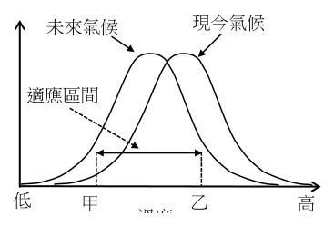
（A） 現今氣候的低溫事件發生機率較高（B） 未來氣候的高溫事件發生機率較低（C） 未來氣候平均溫度比現今氣候低（D） 可耐低溫作物在該星球未來氣候較易生存（E） 該種農作物在未來氣候可適應機率較現今氣候為高答案：（A）
詳解與考點 正解：圖中未來氣候的曲線峰值偏向低溫的甲側，現今氣候的峰值偏向高溫的乙側；判讀低溫事件要比較兩曲線在低溫端的機率。A：現今曲線在低溫端的機率較低，不是較高，與圖不符；題目問錯誤敘述，故 A 為正解。
B：未來氣候曲線偏向低溫側，高溫端的機率較低，敘述正確。
C：未來氣候曲線整體左移，平均溫度較低，敘述正確。
D：可耐低溫作物在未來氣候的較高機率區間中較易生存，敘述正確。
E：農作物可生存的甲至乙區間落在未來曲線較高的機率段，未來氣候可適應機率較高，敘述正確。它看起來容易被誤判，是因為只看甲、乙的溫度範圍，卻忽略兩曲線在該區間下的機率高低。
本題考點：機率分布圖判讀——比較事件機率時，看指定溫度區間的曲線高度或面積；平均值判準——分布整體向低溫側移動，平均溫度隨之降低。
第 3 題
新聞曾報導在地球南極大陸發現來自火星的隕石，科學家何以推測該隕石來自火星？
（A） 已經有載人太空船登陸火星，並曾攜回火星岩石（B） 太陽系早期火星與地球曾發生碰撞，可判斷當時有大量火星岩石掉落到地球（C） 經過化學分析，隕石中的元素同位素比例符合火星的元素同位素比例（D） 該隕石含有大量氧化鐵，呈現暗紅色（E） 該隕石外觀焦黑，有火燒的痕跡答案：（C）
詳解與考點 正解：判定隕石來源需要具有鑑別性的可比對證據，最關鍵的是元素同位素比例。C：經化學分析後，若隕石中元素的同位素比例符合火星的元素同位素比例，便可支持該隕石來自火星的推論，故 C 為正解。
A：人類尚無載人太空船登陸火星，更未由載人任務攜回火星岩石，不能作為判定依據。
B：太陽系早期的行星碰撞假說即使可能造成岩石拋射，也無法精確辨認某一顆隕石的來源。
D：氧化鐵可呈暗紅色，但地球上的赤鐵礦也有此特性，不具火星專屬性。它看起來對，是因為火星常被稱為紅色星球，但顏色只能提供聯想，不能作為來源鑑定證據。
E：外觀焦黑是隕石穿越大氣層受熱的常見痕跡，其他來源的隕石也可能具有，沒有鑑別效力。
本題考點：科學證據判讀——判定樣本來源要選可量測、可比對且具鑑別性的證據；同位素比例判準——樣本的元素同位素比例符合特定天體的特徵時，可支持來源推論。延伸研究可比對火星大氣或地殼資料中的氧同位素、氮同位素與稀有氣體成分，但本題只以選項所述的元素同位素比例作為判斷依據。
第 4 題
海岸邊突然來個大浪將岸上的釣客或遊客捲入海中，這種大浪俗稱「瘋狗浪」。報載 2013 年 11 月 9 日強烈颱風海燕穿過菲律賓，在南海西部向越南挺進。當日臺灣北部天氣良好，無風無雨。某社區大學學員前往新北市貢寮區鼻頭角地質公園海濱從事戶外教學，地質公園海濱突然出現 5 公尺高的「瘋狗浪」，參觀海岸地形的遊客，遭大浪捲入海中。此次「瘋狗浪」最有可能是由哪種因素所造成的？
（A） 因颱風瞬間強風直接產生的風浪（B） 因颱風外圍環流挾帶東北季風產生的湧浪（C） 因颱風造成的風浪破碎後產生的碎浪（D） 因颱風低壓引起水位高漲的暴潮（E） 因颱風造成土石崩落產生的海嘯答案：（B）
詳解與考點 正解：題幹關鍵在於「颱風位於菲律賓附近」而「臺灣北部無風無雨」，表示不是當地強風，而是遠方風暴生成、可長距離傳播的湧浪。B：颱風外圍環流挾帶東北季風，可使遠洋長週期湧浪傳至臺灣北部海岸並形成俗稱的「瘋狗浪」，故 B 為正解。
A：當地無風，颱風強風不在北部海岸附近，不能直接生成當地風浪。
C：碎浪是波浪進入淺海後破碎的近岸現象，不能說明遠方颱風下臺灣北部突發大浪的主因。
D：暴潮是低壓與強風造成整體海面水位抬升，不是單一突發的大浪。它看起來對，是因為兩者皆可能伴隨颱風發生，但題述是個別巨浪而非持續水位上升。
E：土石崩落引發海嘯須有海底崩塌等機制，與本題颱風及湧浪傳播的情境不符。
本題考點：湧浪成因——遠方風暴產生的長週期波浪可傳播數千公里，到岸後仍可能形成巨浪；海浪類型判準——當地無風而有大浪，優先判斷為遠方湧浪，非直接風浪、碎浪或暴潮。
第 5 題（多選）
圖 3 為臺灣四個潮位站在 7 月 26 日至 7 月 28 日三天中的海水面高度紀錄，海水面高度均以基隆的海平面作為基準點。若潮汐為影響港灣汙染物擴散之主因，根據這四個紀錄判斷，以下敘述哪些正確？（應選 2 項）
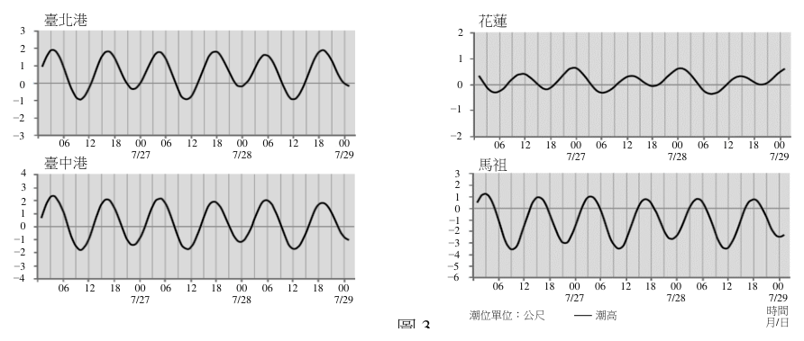
（A） 各測站每日 24 小時內會有兩次潮汐週期（B） 各測站乾潮的發生時間不完全相同（C） 7 月 27 日上午 9 時，各測站均處於退潮階段（D） 臺北港站的潮差較馬祖站的潮差大（E） 花蓮站附近的港灣，汙染物較難擴散答案：（B）（E）
詳解與考點 正解：題幹假設潮汐為港灣汙染物擴散主因，須由各站曲線的低潮時刻與潮差判讀。B：四個測站曲線谷底出現的時刻不同，表示各站乾潮發生時間不完全相同，正確。E：花蓮站曲線振幅、亦即潮差最小，潮汐造成的海水交換與攪動較弱，港灣汙染物較難擴散，正確。
A：不能只以「每日24小時內有兩次潮汐週期」作通則判定各測站；題圖須逐站核對完整週期，該敘述不夠確切，錯誤。
C：7月27日上午9時，各站曲線的上升或下降方向不一致，並非都在退潮，錯誤。
D：由圖判讀臺北港的潮差小於馬祖站，與敘述相反，錯誤。
本題考點：潮位曲線判讀——曲線谷底對應乾潮，谷底時刻可比較各地潮時；潮差判準——最大與最小潮位之差愈大，潮汐交換與擴散作用通常愈強。
第 6 題（多選）
乾、溼球溫度計可用來測量空氣溼度。若甲地測得的乾、溼球溫度皆為 30℃，而乙地乾、溼球溫度皆為 20℃。下列敘述哪些正確？（應選 2 項）
（A） 兩地的相對溼度一樣（B） 甲地的相對溼度較高（C） 甲地的相對溼度較低（D） 兩地的水氣含量相等（E） 甲地的水氣含量較多 (F)甲地的水氣含量較少答案：（A）（E）
詳解與考點 正解：乾、溼球溫度相等時，溼球蒸發不會降溫，表示空氣已飽和，相對溼度為100%；再比較不同溫度下的飽和水氣量即可判斷水氣含量。A：甲地乾球=溼球=30℃，乙地乾球=溼球=20℃，兩地乾溼球溫差皆為0℃，故相對溼度均為100%，A 正確。E：溫度越高，飽和水氣壓越大；甲地30℃的飽和水氣壓大於乙地20℃，兩地又同為100%相對溼度，故甲地實際水氣含量較多，E 正確。
B、C：兩地相對溼度均為100%，沒有甲地較高或較低的差別，B、C 錯誤。
D：相對溼度同為100%只表示都達各自溫度的飽和狀態；30℃與20℃的飽和水氣量不同，兩地水氣含量不相等，D 錯誤。它看起來對，是因為兩地都顯示100%相對溼度，但相對溼度是比例，不能直接當作水氣的絕對量。
本題考點：乾溼球溫度計——乾球溫度＝溼球溫度時，乾溼球溫差為0℃，相對溼度＝100%；相對與絕對溼度判準——相對溼度相同仍須比較溫度，飽和水氣量隨溫度升高而增加。
第 7 題
表 1 為臺北氣象站 2010 年各月份的總降雨量、降雨日數（含雨跡日數）及雨跡日數統計表，雨跡代表當天降水量小於 0.1 mm。下列敘述何者正確？
表 1 臺北氣象站 2010 年各月份降雨統計表 月份（月） 一 二 三 四 五 六 七 八 九 十 十一 十二 總計 總降雨量（mm） 105.3 232.6 66.5 112.5 183.9 419.6 89.1 388.5 144.2 345.4 127.3 63.4 2278.3 降雨日數（天） 16 18 11 21 17 23 13 13 18 24 19 7 200 雨跡日數（天） 1 5 5 3 3 0 1 0 3 5 5 1 32
（A） 臺北測站 2010 年的平均「月降雨量」超過 200 mm（B） 臺北測站冬季的總降雨量高於夏季（C） 臺北測站 12 月發生降雨日的平均日降雨量為全年最大（D） 臺北測站 8 月發生降雨日的平均日降雨量大於 6 月（E） 若排除僅發生雨跡的日數，臺北測站 2010 年降雨日數仍超過半年以上答案：（D）
詳解與考點 正解：題幹要求判讀表中總降雨量與降雨日數，關鍵公式為「平均日降雨量＝總降雨量÷降雨日數」。D：8 月平均日降雨量＝388.5÷13≈29.9 mm；6 月＝419.6÷23≈18.2 mm，29.9>18.2，所以 D 正確。
A：全年平均月降雨量＝2278.3÷12≈189.9 mm，189.9 未超過 200 mm。
B：冬季 12、1、2 月總降雨量約 401.3 mm；夏季 6、7、8 月約 897.2 mm，冬季低於夏季。
C：12 月平均日降雨量約 9.1 mm，不是全年最大；全年最大為 8 月約 29.9 mm。
E：排除雨跡日後的降雨日數＝200-32=168 天；半年約為 182.5 天，168 未超過半年。它看起來對，是因為 168 已接近半年，仍須以 182.5 天為判準。
本題考點：表格資料判讀——比較平均量時，必須以總量除以對應日數；門檻判準——判斷「超過半年」須將 168 天與全年一半約 182.5 天直接比較。
第 9 題
全球主要有三大地震帶，臺灣位於其中的「環太平洋地震帶」上。下列有關此地震帶的敘述何者正確？
（A） 此地震帶的形成主要與張裂性板塊邊界有關（B） 地震主要發生在地殼中，所以此地震帶特徵多淺源地震（C） 此地震帶與環太平洋火山帶（火環）位置幾乎一致，有許多活火山（D） 地震與斷層活動息息相關，此地震帶的地震多半是由平移斷層活動造成（E） 臺灣位在此地震帶上，表示臺灣島與太平洋板塊相接答案：（C）
詳解與考點 正解：題幹問環太平洋地震帶的特徵，關鍵在其多為聚合與隱沒型板塊邊界，隱沒同時造成地震與岩漿活動。C：環太平洋地震帶與環太平洋火山帶「火環」的位置幾乎一致，沿線有許多活火山，如日本、菲律賓與安地斯山一帶，故 C 為正解。
A：環太平洋地震帶主要與聚合、隱沒型板塊邊界有關，不是張裂性板塊邊界。
B：環太平洋地震帶包含隱沒帶形成的淺源、中源與深源地震帶；震源可由海溝附近向陸側逐漸加深，不能用「地震主要發生在地殼中」概括其成因與典型特徵，B 錯誤。
D：此地震帶多與擠壓造成的逆斷層及隱沒作用相關，不是多半由平移斷層活動造成。
E：臺灣主要位於菲律賓海板塊與歐亞板塊的交界，並非與太平洋板塊直接相接。它看起來對，是因為臺灣屬環太平洋地震帶，卻不能據此把「環太平洋」誤解為必與太平洋板塊直接接觸。
本題考點：板塊邊界與地震火山帶——聚合隱沒邊界會形成地震帶與火山帶，且震源可呈由淺至深的分布；區域板塊判讀——以實際相鄰板塊為準，不能僅由地震帶名稱推定板塊接觸關係。
胡瓜嵌紋病毒（CMV）可使其宿主釋放特殊的氣味，吸引CMV的主要傳播媒介（蚜蟲）。 CMV可感染多種作物，例如菸草。它是RNA病毒，會產生5種蛋白質，其中2b基因具有抑制植物抗病毒的能力，也能抑制宿主對抗蚜蟲。當具2b之CMV感染後，植物體上的蚜蟲會產生更多的後代，並有較高的存活率。
第 10 題
某研究做 CMV 感染試驗後，測量植株上的蚜蟲產子數和病毒量。下列哪一個結果圖最能顯示：「2b 的存在有助 CMV 存活於植物體」？（橫軸的試驗處理：H—未受 CMV 感染、CMV—受正常 2b 基因 CMV 感染，及 CMV-2b—受已失去 2b 基因 CMV 感染。縱軸的相對數或量已轉換為 0～1 間之數值。）
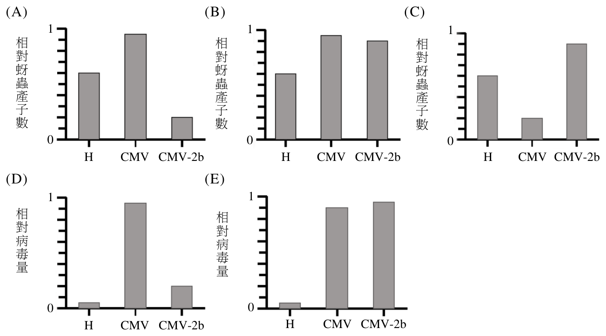
本題選項為上圖中的 A／B／C／D，請對照圖片作答。
答案：（D）
詳解與考點 考點：依「2b 有助 CMV 存活於植物體」設計對照判讀。關鍵在比較病毒量：正常 2b 的 CMV 因 2b 能抑制植物抗病毒，病毒量應高於失去 2b 的 CMV-2b，而 H（未感染）無病毒。能凸顯「2b 提升病毒存活」的圖，必須是病毒量呈 CMV>CMV-2b（且 H 為 0 或最低），故選 D。陷阱：只看蚜蟲產子數、或病毒量在 CMV 與 CMV-2b 間無差異、或方向相反的選項，都無法直接證明 2b 對病毒在植物體內存活的貢獻。判準只有一條：縱軸必須是病毒量，且三組高低順序為 CMV 最高、CMV-2b 次之、H 最低。
第 11 題（多選）
下列哪些現象具有專一性，可用來確定作物已被 CMV 感染？（應選 2 項）
（A） 作物中含有CMV的核糖體（B） 作物中含有CMV的RNA（C） 作物中含有CMV的蛋白質（D） 作物釋放出特殊的氣味（E） 作物上發現大量蚜蟲答案：（B）（C）
詳解與考點 正解：題幹的「專一性」要求檢出只屬於 CMV 的分子標記。B：CMV 是 RNA 病毒，若在作物中檢出 CMV 特異性 RNA 基因組序列，可用 RT-PCR 等方法專一確認感染，正確。C：檢出 CMV 特異性蛋白質，例如以抗體檢測，也可專一確認感染，正確。
A：核糖體是宿主本身具有的構造，CMV 沒有自己的核糖體，A 錯誤。
D：特殊氣味是宿主揮發物，可能由多種病害或環境壓力造成，不具 CMV 專一性，D 錯誤。
E：蚜蟲是 CMV 傳播媒介，大量蚜蟲可能另有原因，不能專一診斷 CMV 感染，E 錯誤。
本題考點：病原專一性檢測——能直接辨識病原特異性 RNA 序列或蛋白質的檢測，才可確認感染；宿主症狀、氣味與媒介昆蟲只提供間接線索，不能作為專一診斷依據。
第 12 題（多選）
巴博（Svante Paabo）因發現了已滅絕人族成員之基因體（DNA 之集合）並探討現代人（）之演化歷程，獲得 2022 年諾貝爾生理—醫學獎。從尼安德塔人的化 H o m o s a p i e n s 石中，他先發現了粒線體 DNA，定序了第一個百萬個核苷酸和第一版的核基因體序列。稍後，又發現一個新的人族成員－丹尼索瓦人（Denisovan），並且組裝其基因體序列。他的這些研究開發了全新而完整的材料，並開創了新的科學方法，為嶄新的古基因體學研究注入動力，以探索人族的演化過程。有關探討人類演化之科學進展，下列哪些正確？（應選 3 項）
（A） 要從化石人族之標本中取得粒線體DNA序列比取得細胞核DNA容易（B） 要從尼安德塔人的核酸中取相當連續的DNA序列比從現代人困難許多（C） 假設丹尼索瓦人之最終學名為 Homo denisova，則此人與現代人非同一物種（D） 核基因體序列所提供的證據徹底否定了由粒線體DNA資料推論之人類演化過程（E） 挹注巴博古基因體學研究的材料和科技已經可以延伸使用到侏羅紀的人類標本上答案：（A）（B）（C）
詳解與考點 正解：本題判斷古基因體研究，關鍵在化石 DNA 的拷貝數、降解狀況與生物分類命名。A：粒線體 DNA 在每個細胞中有數百至數千份拷貝，細胞核 DNA 僅有 2 份；化石殘骸的 DNA 已降解時，較多拷貝使取得粒線體 DNA 序列容易得多，故 A 正確。B：尼安德塔人已滅絕萬年，DNA 嚴重降解、碎片化，要取得相當連續的 DNA 序列遠比從現代人困難，故 B 正確。C：若學名為 Homo denisova，其種加詞 denisova 與現代人的 sapiens 不同，依雙名法代表不同物種，故 C 正確。
D：核基因體序列是對粒線體 DNA 結果的補充與細化，並非「徹底否定」；兩者都支持人類走出非洲等核心演化歷程，D 錯誤。它看起來對，是因為新的核基因體證據可修正部分細節，卻不能因此推成完全推翻先前推論。
E：侏羅紀距今約 1.5 億年，即使在極佳保存條件下，已知可分析的古 DNA 年代也遠不足跨越如此漫長的時間，且侏羅紀根本不存在人類；材料和科技不能延伸到侏羅紀人類標本，E 錯誤。
本題考點：古 DNA 保存——粒線體 DNA 拷貝數高於核 DNA，化石樣本中較易取得；DNA 降解判準——年代愈久越碎片化，已知古 DNA 保存尺度遠不足跨至侏羅紀；雙名法——屬名相同但種加詞不同，表示不同物種；科學證據累積——新證據可補充或修正細節，不可逕稱徹底否定。
第 13 題
取石蓮為材料欲觀察葉片保衛細胞之形態，下列玻片製作法何者最佳？
（A） 將材料以小刀徒手切下薄片（B） 將材料以手指折撕（C） 將材料以蓋玻片壓散（D） 將材料以牙籤或解剖針塗抹於載玻片（E） 將材料直接放置於載玻片上答案：（B）
詳解與考點 正解：觀察葉片保衛細胞形態，需要取得完整、薄且透光的表皮細胞層；石蓮葉片宜以手指折撕取得下表皮。B 可剝離只有一層細胞厚度的表皮，使保衛細胞完整且清晰可見，故 B 為正解。
A：小刀徒手切下薄片時，切面易過厚且厚度難控制，不易清楚觀察保衛細胞形態，A 錯誤。
C：以蓋玻片壓散材料會破壞細胞結構，無法保留完整的保衛細胞，C 錯誤。
D：以牙籤或解剖針塗抹會壓碎細胞，不能觀察完整形態，D 錯誤。
E：直接放置葉片材料過厚、不透光，無法清楚看到保衛細胞，E 錯誤。它看起來最省事，但顯微鏡標本必須薄且透光，完整葉片不符合此條件。
本題考點：植物表皮撕片製作——觀察保衛細胞形態時取下表皮，標本須薄、透光且保留完整細胞層；玻片製作判準——會使材料過厚、壓碎或破壞細胞結構的方法均不適用。
第 14 題
比較大腸桿菌和酵母菌的細胞，下列何者是它們共同擁有的結構？
（A） 細胞核（B） 粒線體（C） 高基氏體（D） 核糖體（E） 內質網答案：（D）
詳解與考點 正解：題幹比較大腸桿菌與酵母菌，關鍵在原核細胞沒有膜包被的胞器，真核細胞才具有。D：核糖體負責蛋白質合成，是原核與真核細胞共同具有的結構，故 D 為正解。
A：大腸桿菌為原核生物，沒有膜包被的細胞核，A 錯誤。
B：粒線體是膜包被胞器，大腸桿菌沒有，B 錯誤。
C：高基氏體只見於真核細胞，大腸桿菌沒有，C 錯誤。
E：內質網是膜包被胞器，大腸桿菌沒有，E 錯誤。
本題考點：原核與真核細胞——原核細胞缺乏細胞核及膜包被胞器；核糖體不具膜，兩類細胞皆有，並執行蛋白質合成。
第 15 題
某物種生殖母細胞雙套染色體數為 12，下列何者正確？
（A） 開始減數分裂之稍前，染色體發生聯會成為四分體數是48（B） 減數分裂一開始，每個生殖母細胞中的同源染色體數是24對（C） 減數分裂第一階段（減數分裂I）之後，每個子細胞中的二分體數是12（D） 該物種卵細胞中的染色體數是6（E） 該物種精子中的染色體數是3答案：（D）
詳解與考點 正解：題幹給雙套染色體數 2n=12，先求單套數 n=12÷2=6；卵細胞是配子，含單套染色體數 n=6。D 的卵細胞染色體數為 6，故 D 為正解。
A：聯會後的四分體數等於同源染色體對數，即 n=6 對，不是 48，A 錯誤。
B：減數分裂開始時同源染色體數為 n=6 對，不是 24 對，B 錯誤。
C：減數分裂 I 後，每個子細胞含 n=6 條染色體；每條染色體仍由 2 條染色分體組成，故為 6 個二分體，不是 12 個，C 錯誤。
E：精子也是配子，含 n=6 條染色體，不是 3 條，E 錯誤。它看起來對，是因為將減數分裂的兩次分裂都當成各再減半；實際上減數分裂 I 後已由 2n 變為 n。
本題考點：減數分裂染色體數——已知 2n 時先以 n=2n÷2 求單套數，配子均含 n 條染色體；聯會與二分體判準——四分體數＝同源染色體對數，減數分裂 I 後每個子細胞有 n 個二分體。
第 16 題（多選）
「在地球上的生物經演化過程而形成目前的生物多樣性」，依此意涵下列敘述哪些正確？（應選 2 項）
（A） 地球的歷史顯示歷次物種多樣性大規模減低的主要原因是新物種出現不足（B） 大規模物種消失之後至達成生態系平衡之間，通常物種多樣性會逐漸增加（C） 除了物種多樣性外，通常生物多樣性還可在基因或生態系的層次上加以觀察（D） 若棲地複雜度增大，但因短期物種組成維持不變，故生態系多樣性仍然不變（E） 某顯性對隱性等位基因的比值為3：1，則顯示顯性表徵較隱性更適應環境答案：（B）（C）
詳解與考點 正解：題幹從演化形成生物多樣性出發，應辨識滅絕後的恢復與生物多樣性的層次。B：大規模物種消失後，倖存物種可經輻射演化增加物種，至生態系恢復平衡前通常多樣性逐漸增加，正確。C：生物多樣性除物種層次外，也可在基因與生態系層次觀察，正確。
A：歷次大規模多樣性降低的直接主因是大量物種消亡，例如隕石撞擊或火山活動，不是新物種出現不足，A 錯誤。
D：棲地複雜度增大本身可提高生態系多樣性，即使短期物種組成不變，也不能說生態系多樣性仍不變，D 錯誤。
E：顯性對隱性表徵3:1是孟德爾遺傳的分離結果，不代表顯性表徵較適應環境，E 錯誤。
本題考點：生物多樣性與演化——生物多樣性包含基因、物種與生態系三層次；大規模滅絕後可經輻射演化回升；孟德爾表徵比例只描述遺傳分離，適應性必須另由自然選擇證據判定。
第 17 題（多選）
經由探討病毒的構造和功能之後，假如分類學者同意擴大以細胞為基礎的林奈分類系統，以容納病毒，則下列哪些建議應屬合理？（應選 2 項）
（A） 新立一個域（B） 新立一個界（C） 將它置入原核生物界（D） 將它置入細菌域（E） 將它置入古菌界答案：（A）（B）
詳解與考點 正解：題幹假設要把病毒納入原本「以細胞為基礎」的林奈分類系統，但病毒不具細胞結構，不能塞入既有細胞生物類群。A：合理做法可新立一個域，使病毒與既有三域區隔，正確。B：也可在域之下新立一個界以歸類病毒，正確。
C：原核生物仍是細胞生物，病毒無細胞結構，不應歸入原核生物界，C 錯誤。
D：細菌域是既有的細胞生物分類，將病毒置入其中不合理，D 錯誤。
E：古菌界同為既有細胞生物類群，不能用以容納病毒，E 錯誤。
本題考點：病毒與生物分類——病毒無細胞結構，不能直接歸入以細胞為基礎的細菌、古菌或真核生物類群；若制度要容納病毒，應另設與現有細胞類群區隔的分類層級。
第 18 題
科學家篩到了兩個突變株（甲和乙），其果實皆較野生型小。下列有關證實甲和乙突變為同一基因的敘述，何者正確？
（A） 若甲和乙皆為隱性同型合子，進行互交，得子代為同樣小果，則可證實（B） 若甲和乙皆為顯性異型合子，進行互交，得子代為同樣小果，則可證實（C） 若甲和乙皆為顯性同型合子，進行互交，得子代為同樣小果，則可證實（D） 若甲和乙皆為隱性同型合子，進行互交，得子代果實較甲乙小，則可證實（E） 若甲和乙皆為顯性同型合子，進行互交，得子代果實較甲乙小，則可證實答案：（A）
詳解與考點 正解：題幹問如何證實甲、乙突變屬同一基因，關鍵方法是互補測試：兩個隱性突變株互交後，子代仍表現小果，表示不能互補、突變位於同一基因。A 中甲、乙皆為隱性同型合子，子代仍為小果，故 A 正確。
B：兩個顯性異型合子互交會產生不同基因型與表型，僅見子代小果無法作為同一基因的判據，B 錯誤。
C：顯性同型合子互交後子代皆表現顯性，不能辨別兩突變是否互補，C 錯誤。
D：子代果實比甲、乙更小，反而可能表示不同基因間的交互作用，不能證實是同一基因，D 錯誤。
E：顯性同型合子互交後子代更小同樣不能作互補判斷，E 錯誤。它看起來對，是因為子代仍有突變表型，但互補測試必須排除顯性表型本身造成的遮蔽。
本題考點：互補測試——以兩個隱性突變株互交，子代為野生型表示不同基因互補，子代仍為突變型表示同一基因或等位基因；顯性突變不宜直接作此判讀。
第 19 題
酸鹼指示劑會在特定 pH 值範圍發生顏色轉變，常用酸鹼指示劑的變色範圍和其顏色如表 2 所示。下列有關酸鹼指示劑的敘述，何者正確？
表 2 常用指示劑 酸型顏色 變色範圍（pH） 鹼型顏色 甲基紅 紅 4.2～6.3 黃 酚紅 黃 6.4～8.2 紅 酚酞 無 8.3～10.0 紅
（A） 酸鹼指示劑會因 pH 值變化而改變顏色，顯示它們本身可以跟酸或鹼反應（B） 將食鹽水溶液，加入少量甲基紅，會呈現紅與黃混合的橙色（C） 相同體積莫耳濃度、相同體積之鹽酸與氫氧化鈉水溶液反應後，加入少量酚酞，會呈現紅色（D） 甲基紅、酚紅、酚酞的變色範圍約為 2 倍氫離子濃度的差異範圍（E） 用甲基紅和酚紅的混合物當指示劑可更有效辨識強酸和強鹼答案：（A）
詳解與考點 正解：題幹問酸鹼指示劑為何隨 pH 變色，關鍵是指示劑的酸型與鹼型顏色不同，兩型可藉質子轉移互相轉換。A：指示劑本身通常是弱酸或弱鹼，能與酸、鹼反應而改變酸型、鹼型比例，因而變色，故 A 為正解。
B：食鹽水近中性，pH 約為 7；甲基紅的變色範圍約為 pH 4.2～6.3，pH 7 已超過上限，應呈黃色，不是紅、黃混合的橙色；B 錯誤。它看起來對，是因為變色範圍內才會出現混合色，卻忽略中性 pH 已在甲基紅變色範圍之外。
C：等莫耳濃度、等體積的鹽酸與氫氧化鈉恰好中和，溶液近中性；酚酞在 pH≤8.2 時無色，不會呈紅色；C 錯誤。
D：pH 每差 1，氫離子濃度相差 10 倍；約 2 個 pH 單位的變色範圍對應約 100 倍，不是 2 倍；D 錯誤。
E：甲基紅的變色範圍約為 pH 4.2～6.3，酚紅約為 pH 6.4～8.0，兩者僅相鄰而幾乎不重疊；混合後會出現較複雜的顏色訊號，未必比單一指示劑更能清楚辨識強酸與強鹼，E 錯誤。
本題考點：酸鹼指示劑——指示劑酸型與鹼型因質子轉移呈不同顏色；變色範圍判讀——pH 位於範圍外時呈單一顏色；pH 差 1 代表氫離子濃度差 10 倍。
第 20 題
文強在不同溫度下測定 \(\mathrm{KNO_3}\) 和 KCl 對水的溶解度（克/100 克水），他將數據記錄於表 3，並據以繪製圖 4 表達溶解度與溫度的關係。下列關於此實驗的結論及其後續實驗的敘述，何者正確？
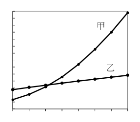
表 3 溫度（℃） 0 10 20 30 40 50 60 70 \(\mathrm{KNO_3}\)（克） 13.3 20.9 31.6 45.8 63.9 85.5 110 138 KCl（克） 27.6 31.0 34.0 37.0 40.0 42.6 45.5 48.3
（A） 圖 4 的曲線甲為 KCl 的溶解度與溫度的關係（B） 由圖 4 得知 \(\mathrm{KNO_3}\) 和 KCl 在某一溫度時具有相同的溶解度 \(x\)，且 \(36.0 < x < 37.0\)（C） 10℃ 時，131 克飽和 KCl 溶液加熱蒸發 10 克水後，再降溫到 10℃，充分攪拌該溶液待其達平衡後，則此時溶液的重量百分濃度為 25%（D） 20℃ 時，將裝有 5 毫升飽和 \(\mathrm{KNO_3}\) 溶液的試管，置於裝有 100 毫升水的燒杯中，並於燒杯中加入 10 克 \(\mathrm{KNO_3}\) 固體，充分攪拌待其溶解後，則可見到試管中有結晶析出（E） 已知一混合物中含有等重量的 \(\mathrm{KNO_3}\) 和 KCl，文強根據他的實驗結果，可利用加熱蒸發濃縮、冷卻結晶、過濾的方法將兩者分離答案：（D）
詳解與考點 正解：D。本題可先由表 3 數據確認圖 4 兩曲線的歸屬：KNO3 溶解度隨溫度上升的增幅遠大於 KCl，增幅較大的曲線甲應為 KNO3，較平緩的乙為 KCl（詳見 A 選項分析）。惟本筆資料中 B、C、D、E 選項文字於敘述中途即中斷（如 D 僅存「20℃時，將裝有5毫升飽和」），已無完整的實驗條件可供核驗；依官方答案，D 為正確選項，但基於現有殘缺文字，無法還原其完整推論依據。
A：由表 3 數據，KNO3 溶解度自 0℃ 之 13.3 克增至 70℃ 之 138 克，增幅遠大於 KCl（27.6 克增至 48.3 克），故圖中增幅較大之曲線甲應為 KNO3，而非 KCl，A 錯誤。
B：選項文字僅存「由圖4得知」，敘述已中斷，現有資料無法核驗其正確性。
C：選項文字僅存至「充分攪拌該溶液待」，敘述已中斷，現有資料無法核驗其正確性。
E：選項文字僅存至「已知一混合物中含有等重量的」，敘述已中斷，現有資料無法核驗其正確性。
本題考點：溶解度曲線判讀——依表列數據比較不同溫度下溶質溶解度的增幅，增幅較大者對應曲線較陡；資料完整性判準——選項文字不全時，詳解僅能依已驗證之基礎數據作答，不得對截斷內容臆測完整實驗情境。
第 21 題（多選）
硫能夠以兩種不同的固態形式穩定存在，分別是斜方硫與單斜硫。小智對此很感興趣，找出了硫的相圖（如圖 5）。依據該圖，下列敘述哪些正確？（應選 3 項） ↑ 斜方硫壓液態（固態）力單斜硫（atm） 1.0 （固態）氣態溫度（℃）→ 445 圖5
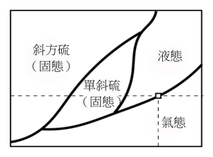
（A） 在1 atm時，硫的沸點為445℃（B） 斜方硫、單斜硫和液態硫三者可以穩定共存（C） 斜方硫、單斜硫和氣態硫三者無法穩定共存（D） 斜方硫、液態硫和氣態硫三者可以穩定共存（E） 斜方硫與單斜硫可藉由溫度改變而互相轉化，兩者互為同素異形體答案：（A）（B）（E）
詳解與考點 正解：題幹給的是硫的相圖，判斷關鍵是 1 atm 水平線與相界線的交點，以及三條相界線交會的三相點。A：在 1 atm 時，水平線與液態、氣態相界線交於 445℃，該溫度即硫在 1 atm 的沸點，A 正確。B：斜方硫、單斜硫與液態硫的三條相界線交於同一三相點，三者可穩定共存，B 正確。E：斜方硫與單斜硫是硫的兩種固態同素異形體，改變溫度越過固態相界即可互相轉化，E 正確，故正解為 ABE。
C：斜方硫、單斜硫與氣態硫也有對應的三相點，可以穩定共存；「無法穩定共存」與相圖不符，C 錯誤。它看起來對，是因為相圖上氣態區域容易被忽略，但三相點必須看三條相界線是否交會。
D：斜方硫、液態硫與氣態硫的相界線沒有交於單一三相點，無法同時穩定共存，D 錯誤。
本題考點：相圖判讀——固定壓力下，液氣相界線交點的溫度就是沸點；三相點判準——三條相界線交於一點時，三相可穩定共存；同素異形體——同一元素的不同結構可在適當溫度、壓力下互相轉化。
第 22 題
光化學煙霧是由氮氧化物（\(\mathrm{NO_x}\)）與揮發性碳氫化合物等污染物質，經紫外線照射後，由不同的反應所產生的懸浮微粒以及對流層中的臭氧，屬於大氣中的二次污染物，圖6為其中的部分過程。此外，臭氧經紫外線照射後，可分解成氧原子與氧分子。下列相關敘述何者錯誤？
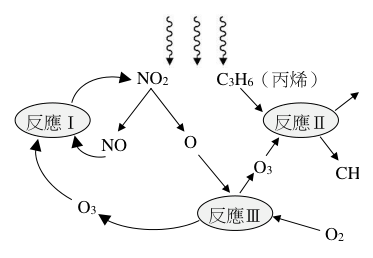
（A） 反應Ⅰ為氧化還原反應（B） 反應Ⅱ中，丙烯被氧化（C） \(\mathrm{NO_2}\) 分解產生 NO 與 O 的過程為吸熱反應（D） 反應Ⅲ的反應式為 \(\mathrm{O_2 + O \rightarrow O_3}\)，為放熱反應（E） 此過程產生的對流層臭氧可幫助修復臭氧層破洞答案：（E）
詳解與考點 正解：題幹問錯誤敘述，關鍵是分辨對流層臭氧與平流層臭氧層的所在位置及作用。E：光化學煙霧產生的是近地面的對流層臭氧，屬空氣污染物，不能移至平流層修復臭氧層破洞，故 E 為錯誤敘述、亦為正解。
A：反應是否為氧化還原反應，須依反應前後元素氧化數是否改變判斷；本筆未附圖6，無法由現有題面核對反應Ⅰ的物種。
B：丙烯是否被氧化，須比較反應Ⅱ的反應物與生成物；本筆未附圖6，無法核對其生成物。
C：NO2 經紫外線分解成 NO 與 O，過程吸收光能，屬吸熱反應。
D：O2 與 O 結合形成 O3 時生成化學鍵並釋放能量，屬放熱反應。
本題考點：臭氧位置與作用——平流層臭氧可吸收紫外線，對流層臭氧則是污染物；反應判讀——吸收光能的分解為吸熱，是否屬氧化還原反應則須核對反應前後的氧化數。
第 23 題（多選）
圖 7 是某分子的結構式，W、X、Y、Z 代表四種不同的原子，已知此分子是組成蛋白質的基本單元之一。下列敘述哪些正確？（應選 3 項）
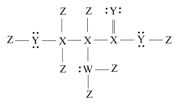
（A） W 為氮（B） X 為氧（C） Y 為碳（D） Z 為氫（E） 此分子有 14 個價電子未參與鍵結答案：（A）（D）（E）
詳解與考點 正解：題幹指此分子為蛋白質基本單元，須以胺基酸的路易斯結構及鍵數、孤對電子判讀原子。A：W 與 C、2 個 Z 形成 3 鍵，並有 1 對孤對電子，符合氮的結構，正確。D：Z 位於端點、數量最多且皆為單鍵，為氫，正確。E：2 個單鍵氧各有 2 對孤對電子、雙鍵氧有 2 對、氮有 1 對，共 7 對＝14 個未參與鍵結的價電子，正確。
B：X 形成 4 個鍵且無孤對電子，應為碳，不是氧，B 錯誤。
C：Y 與碳形成 2 鍵並帶 2 對孤對電子，為氧，不是碳，C 錯誤。
本題考點：路易斯結構判讀——碳通常形成 4 鍵、氮常形成 3 鍵並有 1 對孤對電子、氧常形成 2 鍵並有 2 對孤對電子、氫形成 1 鍵；非鍵結電子按孤對計算，每對為 2 個電子。
第 24 題（多選）
硝酸銨（NH₄NO₃）因含氮量高，常被用來製造化肥，但長期使用會導致土壤酸化。2020 年發生於黎巴嫩貝魯特港的硝酸銨爆炸事件，是因為在高溫條件下，硝酸銨會進行激烈的反應，產生水蒸氣、氮氣以及氧氣所致。下列有關硝酸銨的敘述哪些正確？（應選 3 項）
（A） 硝酸銨具有 4 個 N−H 與 3 個 N−O 共價鍵，是分子化合物（B） 硝酸銨水溶液中的 [H⁺] ＞ [OH⁻]（C） 硝酸銨可幫助植物製造核酸、蛋白質（D） 硝酸銨爆炸時，進行氧化還原反應，成分中的氮皆被氧化產生氮氣（E） 硝酸銨在高溫下進行的反應，其反應式平衡後，各物種係數（為最簡整數）之和為 9答案：（B）（C）（E）
詳解與考點 正解：題幹結合硝酸銨溶液、植物營養與高溫爆炸，須分別判斷酸鹼性、含氮生物分子與氧化還原。B：NH4NO3 水溶液中的 NH4+ 水解呈酸性，因此 [H+]>[OH-]，B 正確。C：硝酸銨提供氮，植物可用以合成核酸的嘌呤、嘧啶鹼基及蛋白質中胺基酸等含氮生物分子，C 正確。E：題意所指高溫分解式為 2NH4NO3→2N2+4H2O+O2；係數依序為 2、2、4、1，總和為 2+2+4+1=9，E 正確。
A：NH4NO3 由 NH4+ 與 NO3- 組成，為離子化合物而非分子化合物；雖有 4 個 N-H 與 3 個 N-O 鍵，結論仍錯誤。
D：NH4+ 中氮的氧化數為 -3，NO3- 中氮為 +5；生成 N2 時均為 0，所以前者被氧化、後者被還原，並非氮皆被氧化。
本題考點：銨鹽酸鹼性——NH4+ 水解使溶液呈酸性，故 [H+]>[OH-]；氧化數判準——氧化數升高為氧化、降低為還原；化學方程式——先配平再將最簡整數係數相加。
貼有甲、乙、丙、丁標籤的四個相同真空密閉容器，其中，甲、丁之間有一個關閉的氣閥相連，並分別於四個容器內置入5.4克M金屬粉末。接著，曉諭將不同質量的氧氣分別通入上述四個容器內，在適當的條件下與M反應，產生相同的氧化物\(M_{2}O_{x}\)。待反應完全後，分別測量每個容器內所生成\(M_{2}O_{x}\)的質量，結果如表4：
第 25 題（多選）
已知的原子量介於與之間，且為整數，則下列敘述，哪些正確？（應 M 20 30 amu x 選 2 項）
表4 容器 通入氧氣質量（克） 產生\(M_{2}O_{x}\)質量（克） 甲 1.6 3.4 乙 3.2 6.8 丙 4.8 10.2 丁 6.4 10.2
（A） x＝1（B） M的原子量為24 amu（C） M O 的莫耳質量為102克/莫耳 2 x（D） 反應完全後，丙容器內有殘餘未反應的金屬M（E） 反應完全後，丁容器內有殘餘未反應的氧氣答案：（C）（E）
詳解與考點 正解：題幹給丙、丁皆生成 10.2 g 的 M2Oₓ，表示 5.4 g 的 M 已全反應；應以質量守恆先求耗氧量，再以莫耳比 M：O=2：x 推回 x 與 M 的原子量。耗氧質量為 10.2-5.4=4.8 g；氧原子莫耳數為 4.8/16=0.3 mol。依 M：O=2：x，M 的莫耳數為 0.3×(2/x)=0.6/x mol；M 的原子量為 5.4÷(0.6/x)=9x amu。因 20≤原子量≤30 且為整數，9x 只能是 27，所以 x=3、M 的原子量為 27 amu。C：M2O3 的莫耳質量為 2×27+3×16=54+48=102 克/莫耳，故 C 正確。E：丁通入氧氣 6.4 g，完全反應只需 4.8 g，剩餘氧氣為 6.4-4.8=1.6 g，故 E 正確。
A：由 9x=27 得 x=3，不是 x=1，A 錯誤。
B：M 的原子量為 27 amu，不是 24 amu，B 錯誤。
D：丙生成 10.2 g 時已由 5.4+4.8=10.2 得知 5.4 g 的 M 恰好全反應，無殘餘 M，D 錯誤。
本題考點：定比定律與質量守恆——氧化物質量減金屬質量即為反應耗氧量；化學式莫耳比——M2Oₓ 中 M：O=2：x，先由氧的莫耳數推得金屬莫耳數；限量試劑判準——投入量大於完全反應所需量時有殘餘，小於所需量時另一反應物有殘餘。
第 26 題
待以上四個容器反應完成後，曉諭打開連接甲、丁二容器的氣閥（氣閥的體積與質量可忽略不計），使氣體可以自由流動進行第二次反應，二次反應完成後，容器的溫度與氣閥開啟前相同，則下列二次反應完成後容器的敘述，何者正確？
表4 容器 通入氧氣質量（克） 產生\(M_{2}O_{x}\)質量（克） 甲 1.6 3.4 乙 3.2 6.8 丙 4.8 10.2 丁 6.4 10.2
（A） 甲容器內的壓力較氣閥打開前的壓力大（B） 甲容器內的固體質量較氣閥打開前增加1.6克（C） 甲與丁容器內的固體質量總和與氣閥打開前相等（D） 丁容器內的物質質量總和與氣閥打開前相等（E） 丁容器內的固體質量總和等於甲容器中的固體質量總和答案：（B）
詳解與考點 正解：題幹的關鍵是開閥後丁容器殘留的氧氣可流入甲容器，並與甲內剩餘金屬 M 再反應；要用質量守恆判斷氧氣轉成固體的質量。開閥前，甲通入氧氣 1.6 g 且完全反應，沒有殘氧，剩餘固體 M 為 3.6 g。丁中 5.4 g 的 M 完全反應，耗氧 4.8 g，剩餘氧氣為 1.6 g。開閥後，這 1.6 g 氧氣流入甲並被剩餘 M 完全吸收；甲內固體增加量=反應進入的氧氣質量=1.6 g。因此 B 為正解。
A：氧氣被甲內的 M 消耗，甲內氣體量減少，壓力不會比開閥前大。
C：甲、丁間有氧氣轉移，且氧氣轉為甲內固體，兩容器固體質量總和會增加 1.6 g，不會相等。
D：丁失去殘留的 1.6 g 氧氣，丁內物質質量總和改變，不會相等。
E：甲、丁固體質量在第二次反應後不必相等；質量守恆適用於整個系統，不是兩容器各自的固體。
本題考點：質量守恆——氣體被固體吸收反應後，固體增加量等於被消耗氣體的質量；連通容器判斷——先追蹤氣體由何處流出、在何處反應，不能把整體守恆誤套到單一容器。
第 27 題（多選）
某生欲探究同族的 X 元素與 Y 元素的週期規律性，設計了以下的實驗：先在圖 8 中的過濾瓶中置入少許二氧化錳，由薊頭漏斗加水，使水位略高於薊頭漏斗的長管底部，然後由薊頭漏斗慢慢倒入含有 Y 與氫組成的過 Y 化氫水溶液，將產生的氣體導入圖 8 中裝有 X 與氫組成的 X 化氫水溶液的燒杯中會產生淡黃色粉末。下列有關此實驗的敘述哪些正確？（應選 3 項）
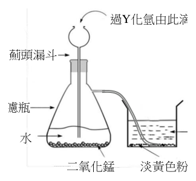
（A） X 元素的非金屬性大於 Y 元素（B） X 元素較 Y 元素易失去價電子（C） X 元素的原子半徑小於 Y 元素的原子半徑（D） 錐形過濾瓶中反應所產生的氣體具助燃性（E） 無色氣體與淡黃色粉末皆為共價分子物質答案：（B）（D）（E）
詳解與考點 正解：先判讀製氣與反應。過氧化氫（過Y化氫，Y=O）在二氧化錳催化下分解：2H2O2→2H2O+O2；生成的氧氣通入硫化氫（X化氫，X=S）水溶液，氧化析出淡黃色硫粉。因此 X 是硫、Y 是氧。B：硫在氧的下方，同族往下原子半徑變大、價電子較易失去，B 正確。D：錐形過濾瓶產生的是 O2，氧氣具助燃性，D 正確。E：無色氣體 O2 與淡黃色粉末 S 都由非金屬組成，為共價物質，E 正確。故選 BDE。
A：同族元素中非金屬性由下往上增強，氧的非金屬性大於硫，即 Y>X，不是 X>Y，A 錯誤。
C：同族元素中原子半徑由上往下增大，硫在氧下方，所以 X 的原子半徑大於 Y，題述方向相反，C 錯誤。它看起來對，是因為兩元素同族容易只記得性質有規律，卻把由上往下的半徑變化方向顛倒。
本題考點：過氧化氫製氧——MnO2 催化 H2O2 分解，產物 O2 具助燃性；同族元素週期性——同族由上往下原子半徑變大、非金屬性減弱、價電子較易失去；元素鑑定判準——由淡黃色硫粉與硫化氫可判 X=S、Y=O。
第 28 題
一群學生討論物理學發展史，初步整理出下列甲～己等 6 項資料的敘述。甲：湯姆森經由實驗發現電子的存在。乙：拉塞福提出原子的正電荷集中在核心、電子分布在核外圍的原子模型。丙：首先發現載有電流的導線會在其周圍產生磁場的是厄斯特。丁：首先推論光是電磁波的是赫茲。戊：首先由實驗發現電磁感應現象的是法拉第。己：首先提出能量具有量子化特性的是愛因斯坦。在上述各項敘述中，正確的為下列何者？
（A） 甲丁戊（B） 乙丙己（C） 丙丁戊己（D） 甲乙丙戊（E） 甲乙丁己答案：（D）
詳解與考點 正解：本題依物理學史人物與貢獻逐項核對。甲：湯姆森由陰極射線實驗發現電子，正確。乙：拉塞福由 α 粒子散射實驗提出原子核模型，認為正電荷集中在核心、電子在核外圍，正確。丙：厄斯特首先發現載流導線周圍會產生磁場，正確。戊：法拉第首先由實驗發現電磁感應現象，正確。因此正確組合為甲、乙、丙、戊，D 為正解。
A、C、E：三組皆含丁或己。丁錯在最早推論光是電磁波者為馬克士威；赫茲是以實驗證實電磁波存在。己錯在最早提出能量量子化者為普朗克；愛因斯坦提出光量子解釋光電效應，故 A、C、E 均錯誤。它看起來對，是因為赫茲與電磁波、愛因斯坦與量子論的關聯密切，但題幹問的是「首先推論／提出」者。
B：B 含己，而能量量子化最早由普朗克提出，不是愛因斯坦，B 錯誤。
本題考點：物理學史人物配對——區分「提出理論」與「實驗證實」；原子與量子理論——湯姆森發現電子、拉塞福提出原子核模型、普朗克提出能量量子化。
第 29 題（多選）
COVID-19 疫情於 2019 年底爆發後，為防止疫情擴散，在初步辨認是否感染病毒時，會先以額溫槍測量額頭溫度；若有確診情形，則會將較嚴重的患者隔離於負壓病房以便診療，並避免病毒隨空氣外洩。關於上述的防疫措施，下列敘述哪些正確？（應選 3 項）
（A） 負壓病房內的空氣壓力比病房外為低，故病房內的空氣不易外洩（B） 負壓病房內的空氣壓力比病房外為高，故病房內的空氣不易外洩（C） 健康的人在體溫正常時與周圍環境必處於熱平衡狀態（D） 發燒時利用冰枕可使額頭降溫，主要是靠額頭與冰枕之間的熱傳導（E） 在量測額溫時，額頭到額溫槍之間是以電磁波的方式進行熱傳播答案：（A）（D）（E）
詳解與考點 正解：題幹同時考負壓病房的氣壓差，以及熱傳導、熱輻射與熱平衡的判準。A：負壓病房內氣壓低於病房外，空氣由外往內流，病房內含病毒的空氣不易外洩，正確。D：冰枕與額頭直接接觸，熱由較熱的額頭傳給較冷的冰枕，主要是熱傳導，正確。E：額頭發出紅外線，額溫槍接收此電磁波以測量溫度，屬於輻射熱傳播，正確。
B：病房內氣壓若高於外部，空氣會向外擴散，反而可能使病毒外洩；負壓病房必須維持內低外高的氣壓關係，B 錯誤。它看起來對，是因為「壓力較高」容易被誤解為能把病房封住，但空氣實際會由高壓流向低壓。
C：健康人體透過新陳代謝持續產熱，必須不斷向環境散熱以維持體溫恆定，並非與周圍環境處於熱平衡；熱平衡是物體與環境同溫且無淨熱交換，C 錯誤。
本題考點：負壓病房——內部氣壓低於外部，空氣由外流入內以防污染空氣外洩；熱傳播判準——直接接觸為傳導、以電磁波傳遞為輻射；熱平衡——同溫且無淨熱交換，體溫恆定不等於熱平衡。
實驗上常利用X光來測定原子結構。一晶體內部的原子排列如圖9下方的放大圖所示，相鄰兩原子層的間距為 d ，X光束射向該晶體後，經兩層原子反射的兩道光波，會有路徑差 2 L 而發生干涉，這與屏幕出射光可見光通過雙狹縫的干涉類似。光源晶體
第 30 題
經兩層原子反射後的 X 光波在屏幕上疊加後，因建設性入射光干涉會在屏幕上出現點狀圖樣，如圖 9 所示。若以米（m）為長度單位，則最適合用來檢測該晶體的 X 光，其波長 λ的數量級接近下列何者？入射光出射光
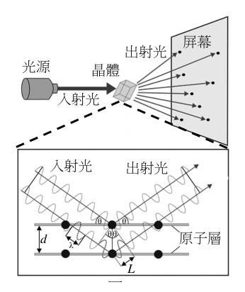
（A） 10−4（B） 1 0 − 7 θ θ d θ θ 原子層 − 1 0 λ（C） 1 0 L（D） 1 0 − 1 3 圖 9 − 1 6（E） 1 0答案：（C）
詳解與考點 正解：晶體繞射的建設性干涉需使 X 光波長與原子層間距 d 同數量級，才能由路徑差產生可辨識圖樣。晶體相鄰原子層間距約為 10^-10 m=0.1 nm，因此適用 X 光的波長也約為 10^-10 m。C 對應此數量級，故 C 為正解。
A：10^-4 m 遠大於原子層間距，無法用來解析晶格，A 錯誤。
B：10^-7 m 約為可見光波長，仍遠大於原子間距，B 錯誤。它看起來對，是因為可見光也能形成干涉，但其尺度不適合檢測原子層。
D：10^-13 m 過短，接近 γ 射線等級，非最適合的 X 光波長，D 錯誤。
E：10^-16 m 更遠短於原子尺度，亦非適用範圍，E 錯誤。
本題考點：繞射判準——探測結構的波長應與結構間距同數量級；原子尺度——晶體原子層間距約 10^-10 m，因此 X 光波長約取 10^-10 m。
第 31 題（多選）
關於可見光與粒子的雙狹縫干涉，下列敘述哪些正確？（應選2 項）
（A） 通過雙狹縫的光波，只有波峰會抵達干涉亮紋處（B） 通過雙狹縫的光波，只有波谷會抵達干涉暗紋處（C） 通過雙狹縫的光波，波峰與波谷同時抵達干涉暗紋處（D） 原子為粒子，但經過適當縫距的雙狹縫也會有干涉現象（E） 電子為粒子，故經過任何的雙狹縫一定不會有干涉現象答案：（C）（D）
詳解與考點 正解：題幹問雙狹縫干涉，判斷關鍵是波的相位關係與物質波。C：暗紋處兩道光波反相，波峰與波谷同時抵達會發生破壞性干涉而相消，C 正確。D：依德布羅意物質波概念，原子雖是粒子仍具波動性；雙狹縫縫距適當時，原子也會出現干涉現象，D 正確。
A：亮紋是兩波同相的建設性干涉，波峰與波峰相遇或波谷與波谷相遇都可形成亮紋，並非只有波峰抵達，A 錯誤。
B：暗紋須由波峰與波谷相遇而相消，並非只有波谷抵達，B 錯誤。
E：電子雖為粒子，仍具有波動性，電子通過適當雙狹縫可出現干涉條紋；「任何」雙狹縫都一定不會干涉的說法錯誤，E 錯誤。它看起來對，是因為電子常被視為粒子，但量子尺度下必須同時考慮其波粒二象性。
本題考點：波的干涉——同相疊加形成建設性干涉，反相疊加形成破壞性干涉；物質波——原子、電子等粒子具有波動性，縫距與波長條件合適時可產生雙狹縫干涉。
第 32 題
甲生為了利用都卜勒效應測量血流的速率，使一發射器 E 發出頻率 \(f\) 很高的聲波，斜向入射到血管中。聲波在被隨著血液流動的紅血球反射後，傳播到靜置於血管兩側的接收器 \(R_1\) 和 \(R_2\)，其中 \(R_1\) 與發射器在血管同側，而 \(R_2\) 在血管另一側，如圖 10 所示。若以 \(f_1\) 和 \(f_2\) 分別代表 \(R_1\) 和 \(R_2\) 測得的反射波頻率，則下列關係式，何者正確？
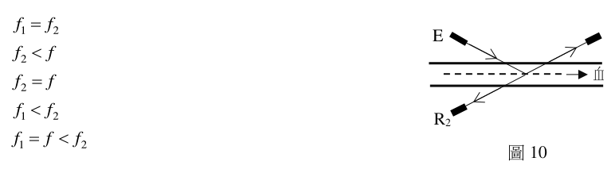
（A） \(f_1 = f_2\)（B） \(f_2 < f\)（C） \(f_2 = f\)（D） \(f_1 < f_2\)（E） \(f_1 = f < f_2\)答案：（B）
詳解與考點 正解：紅血球隨血流遠離發射器 E，先接收到頻率較低的聲波，設此頻率為 f′，則 f′＜f；紅血球再把反射波傳向 R2 時又遠離 R2，因此 f2<f′＜f。B：所以 f2<f，故 B 為正解。
A：紅血球反射聲波時，朝 R1 方向移動而遠離 R2，故 f1>f′＞f2，兩接收器測得的頻率不相等，A 錯誤。
C：由 f2<f′＜f 可知 f2 不等於 f，C 錯誤。
D：由 f1>f′＞f2 可知 f1>f2，不是 f1<f2，D 錯誤。
E：由 f2<f 可知題述 f<f2 已不成立，E 錯誤。
本題考點：反射聲波的都卜勒效應——移動的紅血球先接收發射波、再反射至接收器，產生兩次頻移；判準是逐段比較紅血球與發射器、接收器的接近或遠離關係。
第 33 題
在落體實驗中將半徑相同、質量為 1 g、4 g、9 g 的三個球，從離地同一高度處由靜止落下，測得各球下落的速率 \(v\) 在 \(t>50\ \mathrm{s}\) 後均趨於穩定，其比值為 1：2：3，如圖 11 所示。若空氣施予各球的阻力與浮力的合力，其量值 \(F\) 與下落速率 \(v\) 的關係可近似為 \(F=\alpha v^{\beta}\)，其中常數 \(\alpha\) 和 \(\beta\) 均與球的質量無關，則依據圖示資料，\(\beta\) 最接近下列何者？
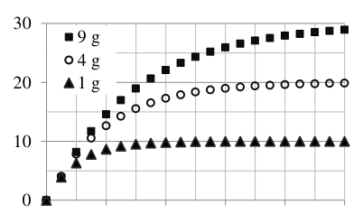
（A） \(\beta=-1\)（B） \(\beta=0\)（C） \(\beta=1/2\)（D） \(\beta=1\)（E） \(\beta=2\)答案：（E）
詳解與考點 正解：本題在三球皆達穩定速率後，應選用終端速度的受力平衡：阻力與浮力的合力 F=αv^β 等於重力 mg。由此可把質量比與終端速率比直接代入求 β。三球質量比為 1:4:9，終端速率比為 1:2:3。因 αv^β=mg，且 α、g 相同，所以 m 與 v^β 成正比，即 1:4:9=1^β：2^β：3^β。代入 β=2，得到 1^2:2^2:3^2=1:4:9，完全吻合，故 E 為正解。
A：若 β=-1，則速率比 1:2:3 對應 v^β 比為 1:1/2:1/3，不等於質量比 1:4:9，A 錯誤。
B：若 β=0，則 1^0:2^0:3^0=1:1:1，不等於 1:4:9，B 錯誤。
C：若 β=1/2，則 1^(1/2)：2^(1/2)：3^(1/2)=1：√2：√3，不等於 1:4:9，C 錯誤。
D：若 β=1，則 1^1:2^1:3^1=1:2:3，不等於 1:4:9；線性阻力會使質量比與速率比相同，與圖示不符，D 錯誤。它看起來對，是因為 F 與 v 成正比是常見的線性阻力模型，但題目給定的比值不支持它。
本題考點：終端速度——速率穩定時，阻力與浮力合力＝重力；冪次關係判讀——在 α、g 相同時，以 m∝v^β 將質量比與速率比逐項對照，能完全重現比值的 β 即為所求。
第 34 題
下列甲～戊為5 個與能源有關的敘述：甲：核能發電廠利用核分裂發電後，反應爐內的原子總質量會比發電前少乙：發電廠利用核分裂發電時，鈾235燃料的全部質量都可轉換為熱能而用以發電丙：以變壓器供電的電器，即使關機，只要變壓器接在插座上而通有電流就會耗電丁：在相同車型與行駛條件下，兩車各載一人與一車載兩人的燃油消耗相同戊：相同耗電功率的LED燈與白熾燈泡，其發光與照明的效能一定相同在上述5項敘述中，正確的為下列何者？
（A） 甲乙丙（B） 甲丁戊（C） 乙丙戊（D） 乙丁（E） 甲丙答案：（E）
詳解與考點 正解：逐一檢驗 5 個能源敘述，關鍵是核分裂的質量虧損與變壓器待機損耗。甲：核分裂時有部分質量依 E=mc² 轉換為能量，反應爐內原子總質量會略少於發電前，正確。丙：變壓器接在插座且一次側通電時，即使電器關機，初級線圈仍有電流，會產生鐵損與銅損而耗電，正確。因此正確的是甲、丙，E 為正解。
A：乙稱鈾 235 的全部質量都轉換為熱能，但實際只有極小部分質量轉換為能量，約 0.1%，A 錯誤。
B：丁把兩車各載一人與一車載兩人視為相同；前者有兩組車體、引擎與傳動損耗，總燃油消耗不同，且戊也錯誤，B 錯誤。
C：乙錯誤，因鈾 235 並非全部質量轉換為能量；戊也錯誤，C 錯誤。
D：乙錯誤；丁也錯誤，兩車各載一人和一車載兩人的燃油消耗不相同，D 錯誤。
本題考點：核能質量虧損——核分裂僅有部分質量依 E=mc² 轉成能量，不能說全部質量消失；變壓器待機耗電——一次側通電即有鐵損與銅損；能源效率判準——同功率不代表同發光效能，LED 效率高於白熾燈。
第 35 題（多選）
圖 12 左邊的絕熱汽缸系統（含活塞）充有理想氣體，活塞與缸壁無摩擦；右邊的理想彈簧系統只能沿其中心軸伸縮，其底端固定，頂端連接一塊平板。在外力只有重力下，兩系統靜止豎立處於平衡狀態，頂端的高度都為 \(h\)。今將重物甲和乙分別靜置於汽缸與彈簧系統的頂端後，兩系統開始振盪，最終活塞停在高度 \(h'\)，而彈簧則持續振盪，其頂端可達到的最大高度為 \(h''\)。下列關於以上三個高度的敘述哪些正確？（應選 2 項）
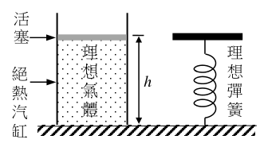
（A） 兩系統都適用能量守恆定律，故 \(h' = h'' = h\)（B） 絕熱汽缸系統不適用能量守恆定律，故 \(h' < h\)（C） 重力作的功使汽缸系統的熱能增加 \(Q\)，但 \(Q\) 無法完全用來作功使活塞升到高度 \(h\)，故 \(h' < h\)（D） 若彈簧伸縮導致其溫度上升，則重力作的功等於彈簧系統與重物乙增加的力學能 \(E\)，而 \(E\) 可用來作功使彈簧系統的頂端上升到高度 \(h\)，故 \(h'' = h\)（E） 若彈簧系統與重物乙的溫度始終不變，則重力作的功等於彈簧系統與重物乙增加的力學能 \(E\)，而 \(E\) 可用來作功使彈簧系統的頂端上升到高度 \(h\)，故 \(h'' = h\)答案：（C）（E）
詳解與考點 正解：題幹關鍵在於比較能量是否以升溫等形式留存在系統內，以及彈簧頂端能否回到原高度。C：汽缸雖絕熱、活塞雖無摩擦，振盪壓縮氣體時，部分力學能仍可不可逆地轉為氣體內能 Q；這部分能量不能完全再作功把活塞舉回 h，所以 h'<h，正確。E：依本題設定，若彈簧系統與重物乙的溫度始終不變，且未設定其他耗散途徑，便視為重力作功未以升溫所對應的內能留存，增加的力學能 E 可再用來使頂端回升至 h，因此 h''=h，正確。
A：兩系統都適用能量守恆，但能量守恆不等於每一部分力學能都可完全回收；汽缸已有部分能量成為內能，故不能推出 h'=h，A 錯誤。它看起來對，是把「總能量守恆」誤當成「高度必回到原值」。
B：絕熱表示系統不與外界交換熱，並不表示不適用能量守恆；汽缸系統仍適用能量守恆，B 錯誤。
D：彈簧若因伸縮而升溫，表示重力作功並非全數成為題目所稱可使系統回升的力學能 E，因此不能由此推出 h''=h，D 錯誤。
本題考點：能量守恆與能量轉換——總能量守恆不代表力學能必可完全回收；回復高度判準——在題目排除其他耗散途徑的理想化設定下，若沒有因升溫而留存、不可回收的能量，增加的力學能才可全部用於回到原高度。
第 36 題
如圖 13 所示，甲與乙為兩個完全相同的圓盤型永久磁鐵，其 N 極與 S 極各自均勻分布在圓盤的上方或下方其中一個表面，但其質量分布並不均勻。甲固定於水平桌面上，乙在磁力與重力作用下斜靠在兩根直桿上，與甲分開。當達靜止平衡時，乙向左傾斜，在鉛直方向其左半邊受到的磁力比右半邊的為大，而其中心圓孔的邊緣壓在豎立的兩直桿上，則下列敘述何者正確？
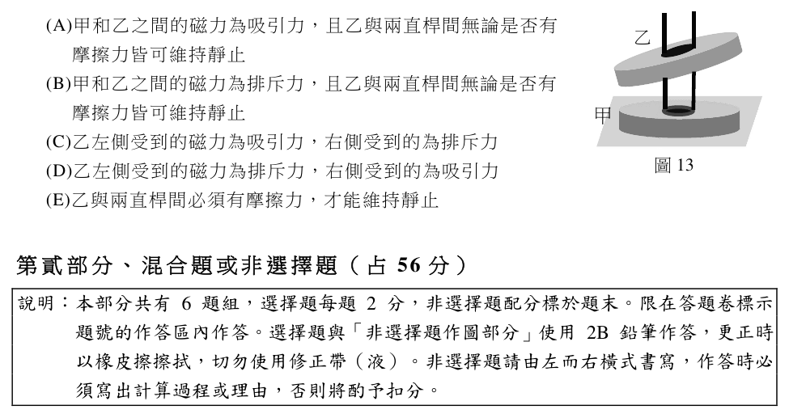
（A） 甲和乙之間的磁力為吸引力，且乙與兩直桿間無論是否有摩擦力皆可維持靜止（B） 甲和乙之間的磁力為排斥力，且乙與兩直桿間無論是否有摩擦力皆可維持靜止（C） 乙左側受到的磁力為吸引力，右側受到的為排斥力（D） 乙左側受到的磁力為排斥力，右側受到的為吸引力（E） 乙與兩直桿間必須有摩擦力，才能維持靜止答案：（B）
詳解與考點 正解：乙圓盤在磁力與重力作用下與甲分開而靜止，關鍵是先判斷甲、乙間的磁力方向，再看支撐力能否平衡。若甲、乙相吸，乙會被拉向甲，不能以分開的狀態懸停；因此甲、乙間為排斥力。乙左半邊所受磁力較右半邊大，只表示左側排斥力較大而造成向左傾斜，左右兩側仍同為排斥力。排斥磁力與重力可由中心圓孔邊緣壓在兩直桿上的支撐力平衡，直桿間即使沒有摩擦力也能維持靜止，故 B 為正解。
A：甲、乙若為吸引力，乙會受到朝甲方向的拉力，與題設兩磁鐵分開且靜止不符，A 錯誤。
C、D：左右半邊磁力大小不同，不等於磁力方向一邊吸引、一邊排斥；甲、乙整體既為排斥，兩側皆受排斥力，C、D 錯誤。它看起來對，是因為左右磁力不等會使圓盤傾斜，但傾斜是力矩差異造成，不表示兩側磁力方向相反。
E：乙可由排斥磁力、重力與兩直桿在圓孔邊緣提供的正向支撐力達到平衡，因此摩擦力不是維持靜止的必要條件，E 錯誤。
本題考點：磁力方向判讀——兩磁鐵分開懸停時，以相斥力解釋其分離狀態；靜力平衡——剛體能否靜止須檢查力與力矩是否可由支撐力平衡，不能未分析就認定必須有摩擦力。
煤主要作為燃料，在2020年提供了全球超過1/3的電力，但煤的使用會破壞環境，是造成氣候變化最大的人為二氧化碳（\(CO_{2}\)）來源。為了實現巴黎協定將全球暖化控制在2℃以下的目標，從2020年到2030年，煤的使用量需要減半。利用水力以取代燃煤來發電，是很多國家降低\(CO_{2}\)排放量所採取的對策之一。假設你被要求提出一個水力發電廠的規畫案，目標是要使它一年可達成的\(CO_{2}\)減排量M為\(10^{9}kg\)。已知水庫供水與下游水道排水都無問題，每部發電機提供電能的功率設定為\(P_{1}=10^{9}W\)，水庫水面與發電機進水口的水位落差為h=100m；當水庫的水在到達發電機進水口時，每單位質量所具有的動能為\(u_{w}\)。表5列出的甲～己（括弧內為其符號）為規劃時需要考慮的一些參數。
第 37 題
依設計，預定的水位落差 h為 100 m，若取重力加速度 g = 1 0 m / s 2 ，則u 約為多少 J/kg？ w
表5 甲（c₁） 乙（c₂） 丙（μ） 丁（ε） 戊（T） 己（N） 燃煤發電時每單位電能耗用的煤質量 每單位質量的煤發電時排放的 CO₂ 質量 每單位時間流入發電機的水質量 發電機將水力轉換為電力的效率 每部發電機每日發電的平均時間 安裝的發電機數目
（A） 10⁰（B） 10¹（C） 10²（D） 10³（E） 10⁴答案：（D）
詳解與考點 正解：水下降的位能轉為動能，關鍵是每單位質量的能量。每單位質量的重力位能為 gh=10×100=1000 J/kg=10³ J/kg，因此 u_w 約為 10³ J/kg，故 D 為正解。
A：100=10² J/kg，比 gh=10³ J/kg 少一個數量級，錯誤。
B：10¹ J/kg，比 1000 J/kg 少兩個數量級，錯誤。
C：10² J/kg=100 J/kg，仍比 1000 J/kg 少一個數量級，錯誤。
E：10⁴ J/kg=10000 J/kg，比 gh=1000 J/kg 多一個數量級，錯誤。
本題考點：重力位能轉換——水位落差 h 的每單位質量能量為 gh；單位與量級——g 的單位為 m/s²，gh 的單位為 J/kg，代入後再寫成科學記號。
第 38 題
為了確保每部發電機都能提供預定的發電功率 P ，需要確定表 5 中哪些參數的數值？ 1
表5 甲（c₁） 乙（c₂） 丙（μ） 丁（ε） 戊（T） 己（N） 燃煤發電時每單位電能耗用的煤質量 每單位質量的煤發電時排放的 CO₂ 質量 每單位時間流入發電機的水質量 發電機將水力轉換為電力的效率 每部發電機每日發電的平均時間 安裝的發電機數目
（A） 甲丁（B） 丙丁（C） 乙戊（D） 丙戊（E） 丁戊答案：（B）
詳解與考點 正解：題目問的是每部發電機的預定功率 P1，因此選用水力發電功率式 P1=m_dot×u_w×ε，其中 m_dot 為每單位時間流入的水質量、ε 為水力轉電效率。水位落差 h=100 m 已知，故每單位質量的位能轉換量 u_w=gh=100g；代入後 P1=m_dot×100g×ε＝10^9 W。要使等式成立，仍須確定 m_dot 與 ε。B：丙是每單位時間流入發電機的水質量，丁是水力轉電效率，故 B 為正解。
A：甲是燃煤發電時每單位電能的耗煤量，與水力單機功率式 P1=m_dot×100g×ε 無關；雖有丁，仍缺少 m_dot，A 錯誤。
C：乙是燃煤發電時每單位煤質量排放的 CO2 量，戊是每日發電平均時間；兩者都不會代入單機瞬時功率 P1，C 錯誤。
D：丙可決定 m_dot，但戊只用於把功率累計為每日或全年電能，不能決定 P1，且缺少 ε，D 錯誤。
E：丁可決定 ε，但戊仍是發電時間，不能決定 P1，且缺少 m_dot，E 錯誤。它看起來對，是因為「每日發電平均時間」與全廠年減排量有關；本題卻只問每部發電機的瞬時功率。
本題考點：水力發電功率——P1=m_dot×u_w×ε，先由已知落差算 u_w=gh=100g，再找未定的 m_dot、ε；量綱判準——功率是單位時間的電能，發電時間與機組數用於總發電量或年減排量，不能取代單機功率參數。
第 39 題
為了估計採用水力發電以取代燃煤發電時，其所發每單位的電能可減少的 CO₂ 排放量，需要取得表 5 中哪些參數的數值？
表5 甲（c₁） 乙（c₂） 丙（μ） 丁（ε） 戊（T） 己（N） 燃煤發電時每單位電能耗用的煤質量 每單位質量的煤發電時排放的 CO₂ 質量 每單位時間流入發電機的水質量 發電機將水力轉換為電力的效率 每部發電機每日發電的平均時間 安裝的發電機數目
（A） 甲乙（B） 乙丁（C） 甲丙（D） 乙丁戊（E） 甲丁戊己答案：（A）
詳解與考點 正解：題幹問「每單位電能」可減少的 CO2 排放量，須直接找出燃煤每單位電能的煤耗與煤的排放係數。A：甲為燃煤發電時每單位電能耗用的煤質量，乙為每單位質量煤排放的 CO2 質量；甲乘乙即為每單位電能可減少的 CO2 排放量，故 A 正確。
B：丁是發電機將水力轉換為電力的效率，屬水力端參數，不能代替燃煤排放係數。
C：丙是流入發電機的水質量，僅影響水力發電規模，與每單位電能的燃煤減碳係數無關。
D：丁、戊分別是效率與每日發電時間，皆用於估算總發電量，不是每單位電能的減碳量。
E：甲、丁、戊、己混入水力效率、時間與機數；每單位電能的減碳量只需甲、乙。它看起來對，是因為這些量都與全廠減排有關，但題目限定的是「每單位電能」。
本題考點：單位量分析——每單位電能減碳量＝每單位電能煤耗×每單位煤 CO2 排放量；總量與單位量區分——水量、效率、運轉時間與機數用於求規模或總量，非單位排放係數。
第 40 題
0
表5 甲（c₁） 乙（c₂） 丙（μ） 丁（ε） 戊（T） 己（N） 燃煤發電時每單位電能耗用的煤質量 每單位質量的煤發電時排放的 CO₂ 質量 每單位時間流入發電機的水質量 發電機將水力轉換為電力的效率 每部發電機每日發電的平均時間 安裝的發電機數目
標準答案未收錄
詳解與考點 參考方向：本題為水力發電年減碳量規劃計算。關鍵步驟：(1)由水位落差 h 求每單位質量水的位能 gh，扣除到達進水口已具動能 u，可用於發電的力學能約為 (gh−u)；(2)單部發電機功率 P 與效率 N1，反推每秒需流入水質量 c=P/[N1·(gh−u)]；(3)由每日發電平均時間 T 與發電機數目 N2，估算年發電量，再由「每單位電能耗煤量」及「每單位質量煤排放 CO2 量」換算燃煤情境的 CO2 排放，令其等於目標減排量 M=10^9 kg，解出所需發電機數目 N2。核心是能量守恆鏈：水位能→電能→等量取代燃煤→減少之 CO2。此為 AI 整理之解題方向，非官方標準答案，須對照官方評分原則。
第 41 題
如果火星成為太空移民的目標，基於已知事實，下列何者正確？
表6 地球 火星 平均繞日半徑（AU） 1 1.5 軌道週期（地球日） 365.26 686.98 自轉週期（小時） 23.9 24.6 自轉軸傾角（度） 23.5 25.2 自轉軸指向星座 小熊座 天鵝座 質量（單位為地球質量） 1 0.11 直徑（單位為地球直徑） 1 0.53 表面大氣壓力（百帕） 1013 7.5 臭氧含量 多 少 天體磁場 較強且全球性 極弱且局部
（A） 是距離地球最近的天體，交通方便（B） 表面引力與地球幾乎相等，有機會以大地工程製造出厚重大氣（C） 與太陽距離適中且具有大氣，整體溫度能使水以液態方式存在於火星地表（D） 地球上的北極星和火星上的北極星是同一顆恆星，不易迷失方向（E） 自轉週期與地球相當，因此日夜溫度變化的週期與地球類似答案：（E）
詳解與考點 正解：題幹要求依表 6 比較火星與地球，關鍵數據是自轉週期分別為 24.6 小時與 23.9 小時。E：兩者自轉週期相當，日夜溫度變化的週期也相近，故 E 為正解。
A：距離地球最近的天體是月球；且火星與地球的距離會隨公轉改變。
B：火星質量僅為地球的 0.11，表面引力遠小於地球，難以長久留住厚重大氣。
C：火星表面大氣壓僅 7.5 百帕，平均溫度低，液態水難以穩定存在於地表。
D：表中地球自轉軸指向小熊座、火星指向天鵝座，兩者的北極星不是同一顆。
本題考點：行星資料比較——先以表列數據直接核對選項；火星居住條件判準——自轉週期相近不代表重力、大氣壓與液態水條件也相近。
第 42 題
在地球觀察25.3 光年外天琴座的織女星，顏色為藍白色。試問若在火星觀察織女星，其顏色應該最接近下列何者？
表6 地球 火星 平均繞日半徑（AU） 1 1.5 軌道週期（地球日） 365.26 686.98 自轉週期（小時） 23.9 24.6 自轉軸傾角（度） 23.5 25.2 自轉軸指向星座 小熊座 天鵝座 質量（單位為地球質量） 1 0.11 直徑（單位為地球直徑） 1 0.53 表面大氣壓力（百帕） 1013 7.5 臭氧含量 多 少 天體磁場 較強且全球性 極弱且局部
（A） 黑色（B） 紅色（C） 黃色（D） 藍白色（E） 紫色答案：（D）
詳解與考點 正解：題幹已知織女星呈藍白色，恆星顏色由表面溫度及其光譜分布決定，不因觀測者從地球移到火星而改變。D：火星與地球同在太陽系內，對25.3光年外織女星的距離差異可忽略，觀測顏色仍為藍白色，故 D 為正解。
A：織女星本身發光，不會呈黑色，A 錯誤。
B：紅色對應較低表面溫度的恆星，與藍白色織女星不符，B 錯誤。
C：黃色也不是移動觀測位置後會由藍白色改變而成的顏色，C 錯誤。
E：紫色不是此恆星由地球改在火星觀測會出現的可見顏色改變，E 錯誤。
本題考點：恆星顏色——恆星的可見顏色主要反映表面溫度與光譜分布；在太陽系內改變觀測位置，對數十光年外恆星的距離影響極小，不能改變其固有顏色。
第 43 題
與地球相比，下列有關火星的敘述，何者正確？
表6 地球 火星 平均繞日半徑（AU） 1 1.5 軌道週期（地球日） 365.26 686.98 自轉週期（小時） 23.9 24.6 自轉軸傾角（度） 23.5 25.2 自轉軸指向星座 小熊座 天鵝座 質量（單位為地球質量） 1 0.11 直徑（單位為地球直徑） 1 0.53 表面大氣壓力（百帕） 1013 7.5 臭氧含量 多 少 天體磁場 較強且全球性 極弱且局部
（A） 火星表面的北回歸線，大約在北緯25度（B） 火星春夏秋冬各季節的時間比地球短（C） 火星受到更強的太陽潮汐力（D） 火星在當地春分時，於火星赤道觀測中午時刻的太陽仰角約為65度（E） 火星抵禦太陽風或宇宙射線的能力遠高於地球答案：（A）
詳解與考點 正解：題幹表格列出火星自轉軸傾角為 25.2 度；回歸線緯度等於自轉軸傾角，因此太陽直射可達北緯約 25 度。A：火星表面的北回歸線約在北緯 25 度，正確，故 A 為正解。
B：火星軌道週期為 686.98 地球日，遠長於地球的 365.26 日，四季時間反而較長，B 錯誤。
C：太陽潮汐力與距離有關；火星平均繞日半徑為 1.5 AU，比地球更遠，受到的太陽潮汐力更弱，C 錯誤。
D：春分時太陽直射赤道，火星赤道正午太陽仰角約為 90 度，不是 65 度，D 錯誤。
E：表中指出火星天體磁場「極弱且局部」，且大氣壓力僅 7.5 百帕，大氣稀薄，抵禦太陽風與宇宙射線的能力遠低於地球，E 錯誤。
本題考點：行星基本參數判讀——回歸線緯度＝自轉軸傾角，據傾角直接判定太陽直射最北、最南位置；季節與軌道週期——繞日週期較長，四季總時長亦較長；太陽潮汐力判準——距太陽越遠，潮汐作用越弱。
第 44 題
從火星觀察織女星所得到的絕對星等和地球上觀測到的有何差異（表 7）？並解釋原因。（2 分）表 7 觀測地點地球火星觀測目標性質織女星絕對星等 0.58 （填入＞、＜或＝） 0.58 原因： _________________________________________________
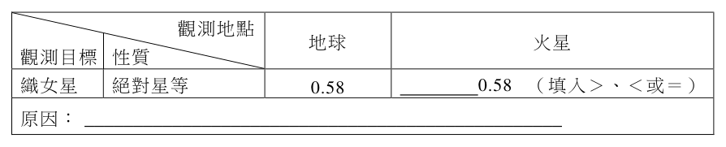
本題選項為上圖中的 A／B／C／D，請對照圖片作答。
標準答案未收錄
詳解與考點 參考方向：答案為「＝」。絕對星等定義為將天體置於 10 秒差距（10 pc）標準距離處所量得的視星等，只取決於恆星本身的真實光度，與觀測者所在位置無關。織女星的本質光度固定，且地球與火星到織女星的距離差異（兩者僅相距約 1 AU，相較織女星約 25 光年的距離可完全忽略）不影響其固有光度，故無論從地球或從火星觀測，所推得的織女星絕對星等都相同，皆為 0.58，兩者關係為「＝」。原因：絕對星等是恆星在標準距離（10 pc）下的亮度，屬於恆星的固有性質，不會因觀測地點（地球或火星）而改變。此為 AI 整理之解題方向，非官方標準答案，須對照官方評分原則。
乳糖與酪蛋白是牛乳中製作乳酪所需的重要成分。加入特定的微生物於牛乳中，靜置一段時間發酵，待微生物將乳糖轉化形成乳酸。在這個過程中，溫度、熟成時間和其他微量添加物（例如食鹽）都會影響乳酪的口感和味道。隨著發酵過程乳酸濃度的上升，酪蛋白會逐漸凝聚析出形成固體，是乳酪的主要成分，殘留在溶液中的蛋白質則統稱為乳清蛋白，經過加工以高蛋白營養品出售。
第 45 題
市售牛乳的 pH 為 6.6，而乳酪的凝聚過程始於 pH5.3。試問市售牛乳的氫離子濃度改變多少後，乳酪會開始凝聚？（log2＝0.30）
（A） 增加約1.3倍（B） 增加約13 %（C） 增加約20倍（D） 減少約10倍（E） 減少約10 %答案：（C）
詳解與考點 正解：本題考pH與氫離子濃度的換算。市售牛乳pH=6.6，乳酪凝聚始於pH=5.3，pH差為6.6-5.3=1.3。氫離子濃度比＝10^(6.6-5.3)＝10^1.3=10^1×10^0.3≈10×2=20，故乳酪開始凝聚時[H+]約為原來的20倍，即增加約20倍，故選C。
A：「增加約1.3倍」誤把pH差值1.3直接當成濃度倍數，混淆對數差與倍率，錯誤。
B：「增加約13%」同樣把1.3誤讀成百分比，數量級全然不符，錯誤。
D：pH由6.6降到5.3代表酸性增強、[H+]增加，「減少約10倍」方向相反，錯誤。
E：「減少約10%」方向與數量級皆錯，錯誤。
本題考點：pH＝－log[H+]的運算——pH每降1單位[H+]變為10倍，並善用log2=0.30估10^0.3≈2；陷阱在把pH差值誤當成濃度倍數，以及弄反增減方向。
第 46 題（多選）
下列關於乳酪製作過程的敘述，哪些正確？（應選 2 項）
（A） 過程中的發酵反應需要氧氣參與才能進行（B） 促使發酵反應的微生物無法在有氧氣的環境中存活（C） 隨著發酵反應的進行，溶液的pH值會逐漸回升至6.6（D） 酪蛋白的親水性會隨pH值而有所改變（E） 乳清蛋白在酸性條件下較酪蛋白更易溶於水答案：（D）（E）
詳解與考點 正解：本題應選2項，考乳酪製作過程的化學與生物特性。D正確：酪蛋白等蛋白質的溶解度與溶液pH有關，pH改變其帶電狀況、進而改變親水性（接近等電點時易凝聚析出）；E正確：題幹指出酪蛋白在酸性下凝聚析出，而乳清蛋白仍留在溶液中，可見乳清蛋白在酸性條件下較酪蛋白更易溶於水。故選DE。
A：乳糖轉化為乳酸屬無氧的乳酸發酵，不需氧氣參與，錯誤。
B：乳酸菌多為耐氧或兼性，並非在有氧環境即無法存活，且題幹亦無此依據，錯誤。
C：發酵持續產生乳酸，溶液pH只會逐漸下降，不會「回升至6.6」，錯誤。
本題考點：乳酸發酵的需氧性、乳酸菌耐氧性，以及蛋白質溶解度隨pH（等電點）而變；陷阱在把發酵誤認需氧、把pH走勢說成回升。
第 47 題
小花根據以上發酵反應的資訊，提出了乳糖發酵的反應式（式1），並測試表8中各種不同的發酵條件對乳酪製作的影響。（a）若依照小花的預期，乳糖在水溶液中發酵生成乳酸的化學反應式為何？（各物質須以分子式表示，並以最簡係數平衡）（2分）（b）若小花想知道熟成時間對乳酪製作的影響，應該挑選表8中哪三組條件下做出的乳酪來作比較？（1分）說明你的根據為何。（1分）
表8 甲 乙 丙 丁 戊 己 庚 辛 微生物種類 A B A C A B B A 發酵溫度（℃） 28 32 40 40 28 32 32 28 熟成時間（小時） 24 5 24 24 24 10 12 24 添加食鹽（%） 0.02 0.1 0.1 0.05 0.1 0.1 0.1 0.05
標準答案未收錄
詳解與考點 參考方向。(a) 乳糖 C12H22O11 水解發酵生成乳酸 C3H6O3。先水解再發酵的淨反應：乳糖加 1 分子水生成 4 分子乳酸，平衡式為 C12H22O11 + H2O → 4 C3H6O3（左右 C 各 12、H 各 24、O 各 12，係數最簡）。(b) 應挑選「僅熟成時間不同、其餘變因相同」的三組。比較表 8，微生物種類、發酵溫度、食鹽濃度需固定，只讓熟成時間變化。乙、己、庚三組皆為微生物 B、32℃、食鹽 0.1%，僅熟成時間 5、10、12 小時不同，符合控制變因原則，故選乙、己、庚。此為 AI 整理之解題方向，非官方標準答案，須對照官方評分原則。
第 48 題（多選）
孟德爾於 1865 年提出的種子形狀雜交實驗顯示：圓滑種子：皺縮種子之比為 \(5474:1850\)（約 \(2.96:1\)），下列哪些是此結果與分離律之期望值有落差的原因？（應選 3 項）
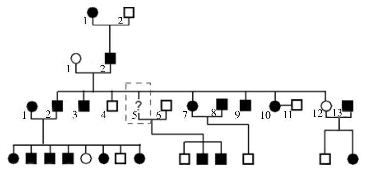
（A） 資料整理時之取樣誤差（B） 模式之期望值未必正確（C） 選取親代植株的逢機失誤（D） 實驗之遺傳因子互相干擾（E） 實驗樣本數仍然不夠大答案：（A）（C）（E）
詳解與考點 正解：題幹的實測比 5474:1850 約為 2.96:1，與分離律期望的 3:1 僅有微小差距，應從隨機抽樣與樣本波動判斷。A：資料整理、計數時的取樣誤差會使實測比偏離期望值，正確。C：選取親代植株時的隨機抽樣誤差會使後代比例波動，正確。E：樣本數仍不夠大時，統計波動尚未充分收斂至 3:1，正確。
B：分離律在此單一性狀雜交下的期望模式是 3:1，模式本身不是這項微小落差的來源。
D：圓滑與皺縮為同一基因座的一對等位基因，本題不涉及不同遺傳因子彼此干擾。它看起來對，是因為「遺傳因子」一詞容易讓人聯想到交互作用，但題設是分離律的單因子情況。
本題考點：分離律與統計波動——單因子雜交的期望表現型比為 3:1；實測值與期望值的小幅差異，優先檢查隨機取樣、計數誤差與樣本數是否足夠。
第 49 題（多選）
下列延伸孟德爾遺傳模式的敘述，哪些正確？（應選 3 項）
（A） 族群繼代遺傳過程中，顯性因子較隱性因子適應環境（B） 若孟德爾在可控條件的溫室進行，則應較在花園田畦更接近模式期望值（C） 若孟德爾實驗中發生達爾文的天擇力，則其實驗值會更加偏離期望值（D） 若控制兩性狀的遺傳因子如摩根所示位於同一染色體，則孟德爾所得到的表徵比值更會偏離期望值（E） 若逢機選取F1的圓滑種子進行培養，則皺縮的等位基因會在有限的世代數內消失答案：（B）（C）（D）
詳解與考點 正解：題幹問延伸孟德爾遺傳模式，應檢驗哪些條件會使實驗結果接近或偏離理論比值。B：溫室可控制溫度、濕度與害蟲等條件，減少環境干擾，實驗值較接近理論期望值，正確。C：天擇會使不同表型的存活率或繁殖率不同，後代比例因而偏離孟德爾期望值，正確。D：兩對遺傳因子位於同一染色體會產生連鎖，不符合獨立分配律，表徵比值會偏離 9:3:3:1 等期望值，正確。
A：顯性只表示表型表現方式，不等於較適應環境；等位基因頻率還受天擇與遺傳漂變等因素影響，錯誤。
E：F1 圓滑種子的基因型可能是 AA 或 Aa；帶有 a 的個體有性生殖後仍可產生 aa，皺縮等位基因不會因此在有限世代內必然消失，錯誤。
本題考點：孟德爾模式的適用條件——控制環境可減少干擾，使結果接近期望比；天擇與連鎖會使表型比偏離預測；顯隱性是表現關係，不是適應度高低。
第 50 題
（a）族譜所缺漏的 III-5 成員在罹病分布圖應為何種圖形？（1 分）（b）圖 14 中哪一對父母及其所有子女之罹病分布，可以恰好正確地表現孟德爾遺傳模式中的體染色體之遺傳方式？（1 分）說明為何為體染色體遺傳的原因？（2 分）
本題選項為上圖中的 A／B／C／D，請對照圖片作答。
標準答案未收錄
詳解與考點 參考方向。由族譜判讀，本病為體染色體顯性遺傳：第 I 代患病母親（I-1，塗黑圓形）與未患病父親（I-2）生下患病兒子 II-2，患病者每代皆出現、男女皆可罹病、且患病子女由患病親代垂直傳遞，符合體染色體顯性。
(a) III-5 應為「塗黑的圓形」（即患病女性）。回推依據：III-5 的配偶 III-6 為未患病的男性（空白方形，基因型 aa），而 III-5 與 III-6 所生子女中出現患病者（其子代為 1 名未患病、2 名患病）。由於顯性致病等位基因 A 不可能來自 aa 的 III-6，這些患病子女的 A 必來自 III-5，故 III-5 必為帶 A 的患者（基因型 Aa）。又因 III-5 與男性 III-6 婚配，III-5 為女性，畫法應為「塗黑的圓形」。
(b) 應找「父母之一患病、另一未患病，子女出現患病與未患病，且兩性皆可能患病」的家庭，藉以排除性聯（性染色體）遺傳而支持體染色體顯性。判斷依據：罹病不分性別、男女患病比例相近，且患病子女由患病親代垂直傳遞，符合體染色體顯性遺傳的特徵。
此為 AI 整理之解題方向，非官方標準答案，須對照官方評分原則。官方參考答案：(a) 為塗黑的圓形（患病女性）。
自工業革命於 1760 年在英國開始後，人類對於化石燃料（煤和石油）的使用滿足了經濟發展和產業革命的需求，然而這些化石燃料的燃燒，也使空氣中的二氧化碳節節上升，如圖 15(a) 所示。除了二氧化碳之外，人類對化石燃料的運用也在環境中留下許多痕跡，鉛元素便是其中一個例子。圖 15(b) 是英國某湖泊岩心（岩芯）中 1700 年以來的鉛濃度變化，圖 15(c) 則是 1700 年以來，該岩心中的鉛-206 與鉛-207 的比例（\( ^{206}\mathrm{Pb}/^{207}\mathrm{Pb} \)）變化。煤和石油有著不同的鉛同位素訊號，如英國地區煤的 \( ^{206}\mathrm{Pb}/^{207}\mathrm{Pb} \) 比例為 1.186，石油的 \( ^{206}\mathrm{Pb}/^{207}\mathrm{Pb} \) 比例為 1.067，分析岩心中鉛濃度以及鉛同位素比例，便能推測該地過去化石燃料的使用情形。鉛-206 及鉛-207 是鉛元素常見的穩定同位素，來源可能是岩石、地下水、煤或石油，同時也可能從鈾元素衰變而來。鈾-238 具有天然放射性，其質子數為 92，中子數為 146，會歷經衰變過程，轉變成穩定的鉛-206 原子，如下式（2）所示。
第 51 題（多選）
放射性同位素的衰變有α衰變、 β 衰變及 γ 衰變等三種，這三種衰變方式發出的放射線分別為α射線、β射線及 γ 射線。α射線就是氦-4（ 42 H e ）的原子核， β 射線就是具有高能量的電子，而γ射線就是波長極短的電磁波。依據式（2）所示鈾-238（238U）衰變為 92 鉛-206（ 2 08 62 ）的過程，下列關於鈾與鉈同位素放射衰變的敘述，哪些正確？（應選 2 P b 項）
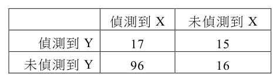
（A） 鈾-238（238U ）發生α衰變後成為釷-234（ 2 3 49 ） T h 92 0（B） 鈾-238（238U ）發生β衰變後成為釷-234（ 2 3 49 T h ） 92 0（C） 鈾-238（238U ）發生 γ衰變後成為釷-234（） 2 3 49 T h 92 0（D） 鉈-206（ 206Tl ）發生α衰變後成為鉛-206（ 206Pb ） 81 82（E） 鉈-206（ 206Tl ）發生β衰變後成為鉛-206（206Pb ） 81 82答案：（A）（E）
詳解與考點 正解：題幹考放射性衰變對質量數與原子序的改變；α衰變使質量數減4、原子序減2，β衰變使質量數不變、原子序加1。A：238U的原子序為92，放出4He後，質量數238−4=234、原子序92−2=90，成為釷-234，正確。E：206Tl的原子序為81，β衰變放出電子時一個中子轉為質子，質量數仍為206、原子序81+1=82，成為鉛-206，正確。
B：238U若發生β衰變，原子序應由92增為93，並非原子序90的釷-234，錯誤。
C：γ衰變只放出光子，質量數與原子序都不變，238U不會變成釷-234，錯誤。
D：206Tl若發生α衰變，原子序應由81減為79、質量數減為202，不會成為原子序82的鉛-206，錯誤。
本題考點：α衰變判準——質量數減4、原子序減2；β衰變判準——質量數不變、原子序加1；γ衰變判準——兩數皆不變，僅釋出電磁波。
第 52 題
放射性同位素的衰變與基本交互作用有關。在有些不穩定的原子核中，部分的質子與中子所組成的小集團會脫離其他質子與中子的束縛而離開原子核；而在另一些原子核中，個別的質子或中子則可發生衰變而分別放出微中子或反微中子。試問在式（2）所示鈾 -238（ 2 39 82 U ）衰變為鈾-234（ 2 39 42 U ）的 3 個階段中，涉及強作用與弱作用的衰變各為何？（2 分）
本題選項為上圖中的 A／B／C／D，請對照圖片作答。
標準答案未收錄
詳解與考點 參考方向。式（2）中 238U→234Th→234Pa→234U 三階段：第一階段 238U→234Th 為 α 衰變，放出由 2 質子與 2 中子組成的氦核（小集團脫離原子核），屬「強作用（強核力）」主導。第二、三階段 234Th→234Pa、234Pa→234U 皆為 β 衰變，中子轉變為質子並放出電子與反微中子，屬「弱作用（弱核力）」主導。故涉及強作用者為第一階段的 α 衰變；涉及弱作用者為後兩階段的 β 衰變。此為 AI 整理之解題方向，非官方標準答案，須對照官方評分原則。
第 53 題
根據圖 15，下列何者正確？
（A） 空氣中二氧化碳的含量可從 ²⁰⁶Pb／²⁰⁷Pb 比例得知（B） 此地的鉛濃度從 1760 年起呈現穩定上升的趨勢（C） 岩心中的鉛濃度可由 ²⁰⁶Pb／²⁰⁷Pb 比例換算（D） 此區域從 1920 年來 ²⁰⁶Pb／²⁰⁷Pb 比例逐漸下降，很可能和使用石油相關（E） 英國於 2000 年起禁用有鉛汽油，因此同湖泊近年的 ²⁰⁶Pb／²⁰⁷Pb 比例應為 0答案：（D）
詳解與考點 正解：圖 15(c) 中 206Pb/207Pb 比例約自 1920 年後由 1.180 逐漸下降；石油的同位素訊號為 1.067，低於煤的 1.186，因此比例向 1.067 靠近是石油使用比重增加的線索。D：此區域自 1920 年來比例下降，很可能和使用石油相關，故 D 為正解。
A：空氣中 CO2 含量由圖 15(a) 判讀，206Pb/207Pb 是鉛同位素比例，兩者不能互相換算，A 錯誤。
B：圖 15(b) 的鉛濃度在 1950 年左右達高峰後略降，並非自 1760 年起穩定上升，B 錯誤。
C：鉛濃度與 206Pb/207Pb 比例分別是圖 15(b)、圖 15(c) 的獨立量測值，比例不能換算出濃度，C 錯誤。
E：即使禁用有鉛汽油，岩石、地下水等自然來源仍可提供鉛；同位素比例也不是可降為 0 的量，E 錯誤。它看起來對，是因為禁用有鉛汽油會改變人為鉛來源，但不會消除所有鉛來源。
本題考點：同位素示蹤——先比較樣本比例與來源訊號，206Pb/207Pb 由 1.180 向石油的 1.067 下降，可推論石油影響增加；圖表判讀——濃度、同位素比例與 CO2 含量是不同測量量，不能任意互換。
第 54 題
工業革命的一大突破就是大量使用蒸氣機作為運輸動力，從圖 15 的數據分析，可以推論此地運輸業的蒸汽機應在何時開始大量使用煤作為燃料？推論依據為何？（4 分）
本題選項為上圖中的 A／B／C／D，請對照圖片作答。
標準答案未收錄
詳解與考點 參考方向。推論：約在 1850 年（19 世紀中葉）開始大量使用煤。依據：煤的 206Pb/207Pb 比例為 1.186（高於石油 1.067）。由圖 15，1850 年前岩心鉛濃度（圖 b）偏低且同位素比例穩定；約 1850 年起鉛濃度明顯上升，且 206Pb/207Pb 比例（圖 c）同步略為升高、趨近煤的 1.186 高比值，顯示此時人為燃煤排放的鉛大量進入沉積，對應運輸蒸汽機開始大量燒煤。直到 1920 年後比例才轉而下降（改用石油）。此為 AI 整理之解題方向，非官方標準答案，須對照官方評分原則。
抗生素廣泛使用的結果會使抗藥性細菌增加，以致現有的抗生素不再有效，如何研發有效的新抗生素，是個熱門的課題。2022年的諾貝爾化學獎頒給了三位從事點擊反應（click reactions）相關研究的學者，此類反應具有高效率產生化學鍵結的特性，若在生物分子上使用，可以使其便於與其他分子連接而產生新的應用。點擊反應便可以幫助化學家針對天然的抗生素進行修飾，或者直接用於合成新類型的分子，以開發新型抗生素來應對細菌抗藥性的問題。在某新抗生素的研究中，發現X與Y兩種細菌可生存在人體腸道中的相同部位。若能製造抑制對方生長的化合物，即可爭奪有限的空間與資源，對自身族群的生存即有很大的助益。科學家針對144個志願者所提供的檢體，偵測X與Y存在與否的人數，數據如表9 所示。
第 55 題
依據表 9，細菌 X 與 Y 之間的關係最可能是下列何者？
表9 偵測到 X 未偵測到 X 偵測到 Y 17 15 未偵測到 Y 96 16
（A） 細菌X能夠抑制細菌Y的生長（B） 細菌Y能夠抑制細菌X的生長（C） 細菌X與Y皆會抑制彼此的生長（D） 細菌X與Y不會抑制彼此的生長（E） 細菌X會促進細菌Y的生長答案：（A）
詳解與考點 正解：官方答案為 A；惟表 9 是觀察資料，只能顯示 X、Y 的偵測呈負相關，不能單憑列聯表證實抑制方向。依題目要求選「最可能」的關係，應比較有無 X 時 Y 的出現率：偵測到 X 共 17+96=113 人，其中同時有 Y 者為 17 人，Y 出現率＝17/113≈15％；未偵測到 X 共 15+16=31 人，其中有 Y 者為 15 人，Y 出現率＝15/31≈48％。有 X 時 Y 的偵測率較低，依題目預設的判讀方向，以 A「X 能夠抑制 Y」最符合官方答案。
B：同一列聯表也能改以有無 Y 比較 X 的比例，因此觀察資料本身不能證實 B 所述方向；依題目指定以有無 X 比較 Y，B 不取。
C：互相抑制須以控制實驗分別驗證兩個方向，不能由這張表直接成立，C 不取。
D：有 X 時 Y 的偵測率約 15％，無 X 時約 48％，兩者有明顯關聯，D 不符。
E：若依題目預設由 X 判讀 Y，促進作用應使有 X 時 Y 的出現率較高；實際較低，E 錯誤。它看起來對，是因為同時偵測到 X、Y 的 17 人容易被當作共存證據，但判讀須比較條件出現率，不能只看單一格數。
本題考點：2×2 列聯表判讀——比較有無某因子時另一因子的條件出現率，17/113≈15％低於 15/31≈48％，顯示負相關；因果判準——觀察資料不能單獨證實作用方向，若要確認 X 單向抑制 Y，仍須以控制實驗操弄 X 並觀察 Y。
第 56 題
下列哪一個試驗的設計（縱軸所施的劑量大小）最可以模擬「抗生素廣泛被使用的結果」，而得以測量細菌是否產生抗藥性或其抗藥性的程度？
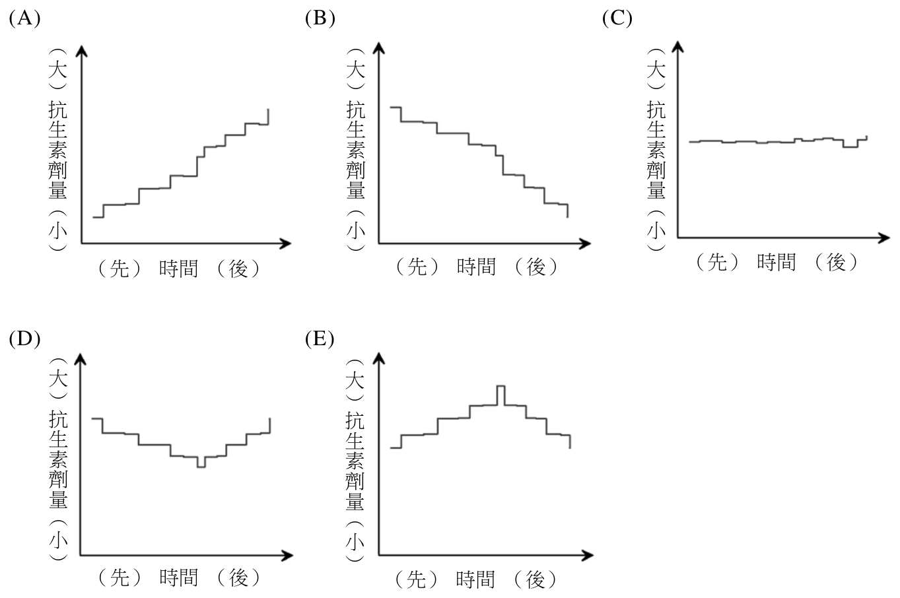
表9 偵測到 X 未偵測到 X 偵測到 Y 17 15 未偵測到 Y 96 16
本題選項為上圖中的 A／B／C／D，請對照圖片作答。
答案：（A）
詳解與考點 正解：官方答案為 A；惟本筆未保存 A、B、D 的劑量—時間圖，C、E 的圖文亦有缺漏，以下依原附圖的曲線特徵說明。關鍵是模擬抗生素「廣泛被使用」造成的長期選汰壓力，故應選隨時間持續施加高劑量抗生素的設計。依原附圖，A 的劑量持續維持高量，使細菌長期承受選汰壓力，最能觀察是否產生抗藥性及其程度，故 A 為正解。
B：依原附圖，其劑量未持續維持高量，選汰壓力不如 A 穩定，B 錯誤。
C：依原附圖，其劑量隨時間遞減，後期壓力降低，不能代表持續廣泛使用抗生素，C 錯誤。它看起來對，是因為一開始也有施用抗生素，但關鍵在於長期壓力是否維持。
D：依原附圖，其施用安排有中斷或未維持高劑量，細菌未長期處於同等選汰壓力下，D 錯誤。
E：依原附圖，其長期維持低劑量，選汰壓力不足，無法良好模擬抗生素被廣泛使用的情境，E 錯誤。
本題考點：演化與抗藥性實驗設計——要測量抗藥性，實驗條件須持續施加足以造成選汰的抗生素壓力；變因判準——比較劑量—時間圖時，優先選擇高劑量且不中斷的處理組。
第 57 題
廣泛使用抗生素使抗藥性細菌增加的演化力為何？（2 分）
表9 偵測到 X 未偵測到 X 偵測到 Y 17 15 未偵測到 Y 96 16
標準答案未收錄
詳解與考點 參考方向。演化力為「天擇（天擇作用／天然選擇）」。當抗生素被廣泛使用，環境中存在抗生素時，不具抗藥性的細菌被殺死，原本即帶有抗藥性突變的少數細菌得以存活並繁殖，將抗藥性基因傳給後代。抗生素扮演選汰壓力（selective pressure），使抗藥性個體具生存與繁殖優勢，族群中抗藥性基因頻率逐代上升，這正是天擇驅動的演化。故答案要點：天擇（抗生素為選汰壓力，篩選出抗藥性細菌）。此為 AI 整理之解題方向，非官方標準答案，須對照官方評分原則。
第 58 題
科學家成功的找到了一種新的抗生素−路鄧素（\(Lugdunin,C_{40}H_{62}N_{8}O_{6}S\)），其結構如圖16所示。已知細菌合成路鄧素的方式，首先是串接常見的生物分子單體，形成鏈狀分子後，再將兩端相連成環狀分子。串接路鄧素的生物分子單體可形成哪一種重要有機物質？
（A） 纖維素（B） 核苷酸（C） 蛋白質（D） 三酸甘油酯（E） 葡萄糖答案：（C）
詳解與考點 正解：本題考由分子結構辨認生物分子單體及其可形成的有機物質。圖示中的路鄧素具有多個由羰基與胺基構成的胜肽鍵，且題幹說明其先由單體串成鏈狀分子，再首尾相連成環，可判定路鄧素是環狀胜肽，其串接單體為胺基酸。胺基酸以胜肽鍵連成多肽鏈，可形成蛋白質，故選C。
A：纖維素由葡萄糖單體以糖苷鍵聚合而成，並非由路鄧素的胺基酸單體形成，錯誤。
B：核苷酸是核酸的單體，不是胺基酸串接後形成的產物，錯誤。
D：三酸甘油酯由甘油與三分子脂肪酸酯化形成，不是胺基酸串成的鏈狀聚合物，錯誤。
E：葡萄糖是單醣，不是胺基酸串接形成的產物，錯誤。
本題考點：從結構中的胜肽鍵與「先成鏈、再成環」辨認環狀胜肽，建立胺基酸／胜肽鍵／多肽或蛋白質的對應。不能只憑分子式含氮判定為胜肽，因含氮不是胜肽專有特徵。
第 59 題（多選）
根據文獻報導，路鄧素可使金黃葡萄球菌無法合成新的 DNA、無法合成 RNA、無法製造蛋白質，也無法製造細胞壁的前驅物，同時抑制了細菌四個主要生理代謝的途徑。下列有關 DNA、RNA、蛋白質與細胞壁等物質的敘述，哪些正確？（應選 3 項）
表9 偵測到 X 未偵測到 X 偵測到 Y 17 15 未偵測到 Y 96 16
（A） 植物細胞壁的主要成分是纖維素，其分子式可以 \((C_6H_{10}O_5)_n\) 表示（B） 植物細胞壁含有長碳鏈，是屬於一種界面活性劑（C） DNA 與 RNA 的基本結構為：磷酸根-五碳醣-含氮鹼基（D） DNA 與 RNA 具有相同的五碳醣（E） 蛋白質是由胺基酸所組成的聚合物答案：（A）（C）（E）
詳解與考點 正解：題幹涉及 DNA、RNA、蛋白質與細胞壁的化學組成，應由各分子的基本單位與結構判斷。A：植物細胞壁主要成分為纖維素，是葡萄糖聚合物，可寫為 (C6H10O5)n，正確。C：DNA 與 RNA 的核苷酸基本結構皆為磷酸根－五碳醣－含氮鹼基，正確。E：蛋白質由胺基酸以胜肽鍵聚合而成，正確。
B：纖維素不是長碳鏈油脂，並非界面活性劑，B 錯誤。
D：DNA 的五碳醣是去氧核醣，RNA 的五碳醣是核醣，兩者不同，D 錯誤。
本題考點：生物巨分子組成——纖維素為葡萄糖聚合物，重複單位可寫作(C6H10O5)n；核苷酸由磷酸根、五碳醣與含氮鹼基組成；DNA 與 RNA 的糖分別為去氧核醣與核醣，蛋白質則由胺基酸聚合。
第 60 題
科學家同時測試了路鄧素與另一種利用點擊反應開發出來的新型抗生素 T 作為比較，發現路鄧素與 T 對細菌 S 的最低抑菌濃度分別為 2.0 μg/mL 與 1.5×10⁻⁶ M。若以莫耳濃度比較，則以何種抗生素處理細菌 S，所需的濃度較低？（路鄧素的莫耳質量為 782 g/mol，需寫出計算過程）（2 分）
表9 偵測到 X 未偵測到 X 偵測到 Y 17 15 未偵測到 Y 96 16
標準答案未收錄
詳解與考點 參考方向：把路鄧素換算成莫耳濃度再比較。2.0 μg/mL = 2.0×10⁻³ g/L，除以莫耳質量 782 g/mol 得約 2.56×10⁻⁶ M；T 為 1.5×10⁻⁶ M。T 小於路鄧素，故處理細菌 S 所需濃度較低者為 T。關鍵：單位換算 μg/mL→g/L、除莫耳質量得 mol/L、再比大小。此為 AI 整理之解題方向，非官方標準答案，須對照官方評分原則。
其他年度
回到學科能力測驗自然的年度總覽 ，
或到學科能力測驗題庫首頁 看其他科目。
題目與標準答案出自大考中心 學測歷年試題（依著作權法 §9，考試試題不受著作權保護）。依中華民國《著作權法》第 9 條第 1 項第 5 款，
依法令舉行之各類考試試題不得為著作權之標的，得自由利用。詳解為 AI 整理的學習輔助，
並非官方標準答案 ；中華民國會修訂，引用前請對照現行版本查證。